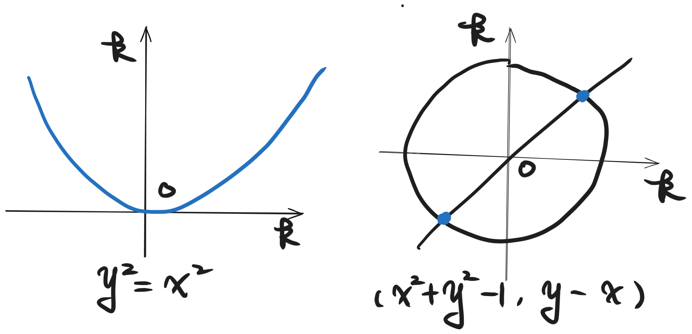
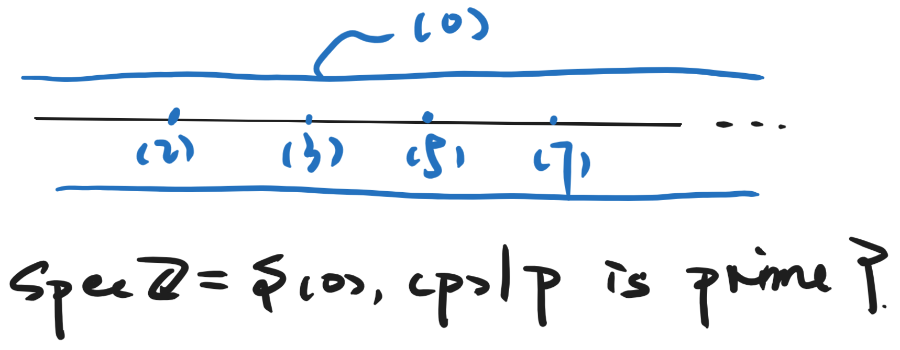
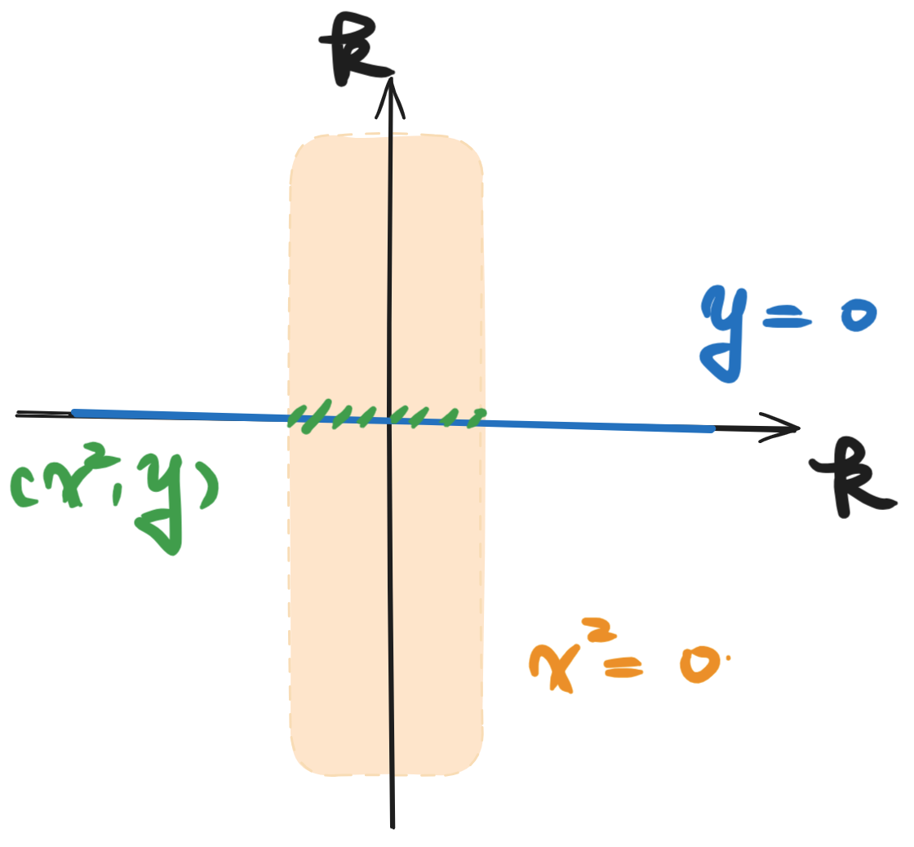
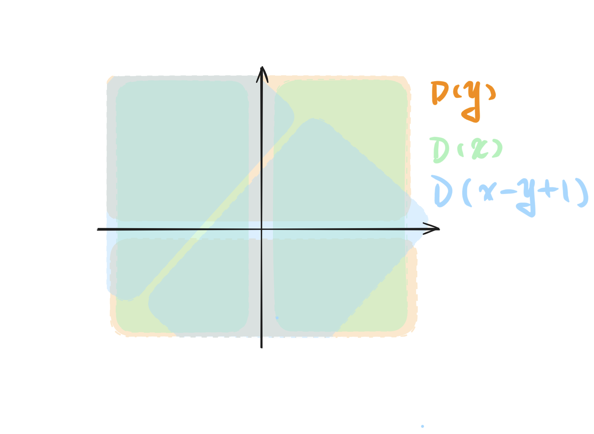
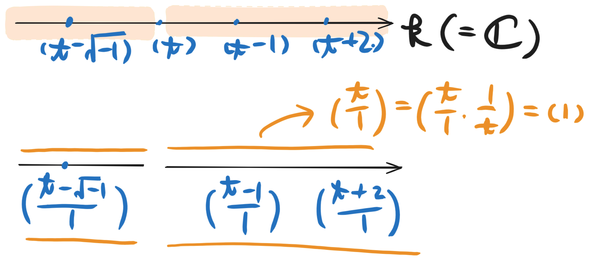
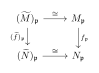
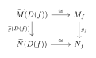
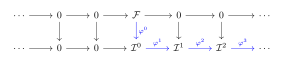
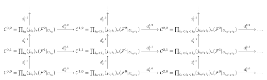

Scheme Theory
Affine Schemes
Affine Schemes
The Topology of Affine Schemes
In classical abstract algebra, we encounter a wide variety of rings, such as the ring of integers \mathbb{Z}, polynomial rings k[x_1, \dots, x_n] over a field k, or rings of continuous functions. Associated with any commutative ring R is its set of prime ideals, denoted by \operatorname{Spec}(R). At first glance, \operatorname{Spec}(R) is merely a static, algebraic set. However, a profound insight of modern algebraic geometry is that this set carries a natural geometric structure. To see how geometry emerges from these prime ideals, let us first recall some familiar setups from analytic and algebraic geometry.
Consider the classical coordinate space k^n over an algebraically closed field k (such as the complex numbers \mathbb{C}). In analytic geometry, we study geometric objects defined as the zero loci of systems of polynomial equations. For instance:
A single non-zero polynomial equation like y - x^2 = 0 in k^2 defines a parabola.
A system of equations like \{x^2 + y^2 - 1 = 0, y - x = 0\} defines the intersection points of a circle and a line.

More generally, for any subset of polynomials S \subset k[x_1, \dots, x_n], we can define its vanishing locus (or zero set) in k^n as: V(S) = \{ (a_1, \dots, a_n) \in k^n \mid f(a_1, \dots, a_n) = 0 \text{ for all } f \in S \}. These zero sets V(S) are called affine algebraic sets. If we analyze the properties of these algebraic sets, we observe that they behave remarkably like the closed sets of a topological space. Specifically:
The empty set \emptyset = V(1) and the entire space k^n = V(0) are algebraic sets.
The intersection of any family of algebraic sets is again an algebraic set: \bigcap_{\alpha} V(S_{\alpha}) = V\left(\bigcup_{\alpha} S_{\alpha}\right).
The union of two algebraic sets is an algebraic set: V(S_1) \cup V(S_2) = V(S_1 \cdot S_2), where S_1 \cdot S_2 = \{fg \mid f \in S_1, g \in S_2\}.
The Zariski Topology
We now equip the set of prime ideals with a topology. The fundamental idea is to define "geometric shapes" (closed sets) as the loci where a collection of "functions" (elements of A) vanish.
Definition 1.1 (Vanishing Locus). Let A be a ring. For any subset E \subseteq A (usually an ideal \mathfrak{a}), we define the vanishing locus V(E) as the set of prime ideals containing E: V(E) := \{ \mathfrak{p} \in \operatorname{Spec} A \mid E \subseteq \mathfrak{p} \}. If \mathfrak{a} is the ideal generated by E, clearly V(E) = V(\mathfrak{a}).
Proposition 1.1 (The Zariski Topology). The collection of sets \{ V(\mathfrak{a}) \mid \mathfrak{a} \text{ is an ideal of } A \} satisfies the axioms of closed sets for a topology on \operatorname{Spec} A, called the Zariski topology.
V(0) = \operatorname{Spec} A and V(1) = \emptyset.
Order Reversing: If \mathfrak{a} \subseteq \mathfrak{b}, then V(\mathfrak{b}) \subseteq V(\mathfrak{a}).
Arbitrary Intersections: For any family of ideals \{\mathfrak{a}_i\}_{i \in I}, \bigcap_{i \in I} V(\mathfrak{a}_i) = V\left( \sum_{i \in I} \mathfrak{a}_i \right).
Finite Unions: For any two ideals \mathfrak{a}, \mathfrak{b}, V(\mathfrak{a}) \cup V(\mathfrak{b}) = V(\mathfrak{a}\mathfrak{b}) = V(\mathfrak{a} \cap \mathfrak{b}).
Proof. (i) 0 is contained in every ideal, so V(0) is the whole set. 1 is contained in no prime ideal (by definition of prime), so V(1) is empty.
(ii) If \mathfrak{p} \supseteq \mathfrak{b} and \mathfrak{b} \supseteq \mathfrak{a}, then \mathfrak{p} \supseteq \mathfrak{a}.
(iii) \mathfrak{p} \in \bigcap V(\mathfrak{a}_i) \iff \forall i, \mathfrak{a}_i \subseteq \mathfrak{p} \iff \sum \mathfrak{a}_i \subseteq \mathfrak{p} \iff \mathfrak{p} \in V(\sum \mathfrak{a}_i).
(iv) Since \mathfrak{a}\mathfrak{b} \subseteq \mathfrak{a} \cap \mathfrak{b} \subseteq \mathfrak{a} (and \mathfrak{b}), by (ii) we have V(\mathfrak{a}) \cup V(\mathfrak{b}) \subseteq V(\mathfrak{a} \cap \mathfrak{b}) \subseteq V(\mathfrak{a}\mathfrak{b}). Conversely, let \mathfrak{p} \in V(\mathfrak{a}\mathfrak{b}). Then \mathfrak{a}\mathfrak{b} \subseteq \mathfrak{p}. Since \mathfrak{p} is prime, this implies \mathfrak{a} \subseteq \mathfrak{p} or \mathfrak{b} \subseteq \mathfrak{p}. Thus \mathfrak{p} \in V(\mathfrak{a}) \cup V(\mathfrak{b}). ◻
To ground these abstract definitions in intuition, let us examine the simplest yet most profound example: the spectrum of the ring of integers, \operatorname{Spec}(\mathbb{Z}).
Recall that \mathbb{Z} is a PID. Its prime ideals are easily classified: they consist of the zero ideal (0) and the principal ideals (p) generated by prime numbers p \in \{2, 3, 5, 7, \dots\}. Under the Zariski topology, these “points” exhibit a fascinating geometric behavior that departs from our classical Hausdorff intuition.

Let us analyze the closed sets of \operatorname{Spec}(\mathbb{Z}) by looking at the closures of individual points. By definition, the closure of a point \{\mathfrak{p}\} is the smallest closed set containing it, which is given by V(\mathfrak{p}).
The Closed Points (Non-zero Prime Ideals): For any prime number p, the ideal (p) is a maximal ideal in \mathbb{Z}. Because it is maximal, there are no other prime ideals that contain it. Therefore, the vanishing set of (p) is extremely simple: V((p)) = \{ \mathfrak{q} \in \operatorname{Spec}(\mathbb{Z}) \mid (p) \subset \mathfrak{q} \} = \{ (p) \}. Since the singleton set \{(p)\} is equal to its own vanishing set V((p)), it is a closed set in the Zariski topology. Thus, every non-zero prime ideal (p) behaves like a standard, discrete, “closed point” in classical geometry. No other points are contained within its closure.
The Generic Point (The Zero Ideal): The situation changes dramatically when we consider the zero ideal (0). Since (0) is contained in every single prime ideal of \mathbb{Z}, its vanishing set is as large as possible: V((0)) = \{ \mathfrak{q} \in \operatorname{Spec}(\mathbb{Z}) \mid (0) \subset \mathfrak{q} \} = \operatorname{Spec}(\mathbb{Z}). This means that the closure of the single point \{(0)\} is the entire space \operatorname{Spec}(\mathbb{Z}). In topological terms, (0) is a dense point, often called the generic point of the space.
This topological structure gives us a striking geometric picture. We can visualize \operatorname{Spec}(\mathbb{Z}) as a curved line where the points are the prime numbers (2), (3), (5), \dots. These points are closed and stand alone.
However, floating over or woven throughout this entire space is the generic point (0). Because (0) is contained in the closure of every other point’s neighborhood, it is “infinitesimally close” to every single prime ideal in the space. It is a point that cannot be separated from the rest of the space, acting as a mathematical glue that binds the discrete prime numbers into a unified, continuous geometric curve.
Nullstellensatz
The map \mathfrak{a} \mapsto V(\mathfrak{a}) is surjective onto closed sets but not injective. The following proposition clarifies that closed sets correspond one-to-one with radical ideals.
Proposition 1.1 (Algebraic Nullstellensatz). Let \sqrt{\mathfrak{a}} = \{f \in A \mid f^n \in \mathfrak{a} \text{ for some } n\} denote the radical of \mathfrak{a}.
\operatorname{Spec} A = \emptyset if and only if A = 0.
V(\mathfrak{a}) = V(\sqrt{\mathfrak{a}}).
Intersection of Primes: \sqrt{\mathfrak{a}} = \bigcap_{\mathfrak{p} \in V(\mathfrak{a})} \mathfrak{p}.
The map \mathfrak{a} \mapsto V(\mathfrak{a}) induces a bijection between radical ideals of A and closed subsets of \operatorname{Spec} A. Specifically, V(\mathfrak{a}) \subseteq V(\mathfrak{b}) \iff \sqrt{\mathfrak{b}} \subseteq \sqrt{\mathfrak{a}}.
Proof. (i) If A=0, clearly \operatorname{Spec} A = \emptyset. Conversely, if A \neq 0, let \Sigma be the set of all proper ideals of A. Since 1 \neq 0, (0) \in \Sigma. \Sigma is partially ordeUniBlue by inclusion. For any chain, the union is a proper ideal (it doesn’t contain 1). By Zorn’s Lemma, \Sigma has a maximal element \mathfrak{m}. Maximal ideals are prime, so \mathfrak{m} \in \operatorname{Spec} A \neq \emptyset.
(ii) If \mathfrak{a} \subseteq \mathfrak{p}, then f^n \in \mathfrak{a} \implies f^n \in \mathfrak{p} \implies f \in \mathfrak{p}. So V(\mathfrak{a}) \subseteq V(\sqrt{\mathfrak{a}}). The reverse is obvious.
(iii) Clearly \sqrt{\mathfrak{a}} \subseteq \mathfrak{p} for all \mathfrak{p} \supseteq \mathfrak{a}, so \sqrt{\mathfrak{a}} \subseteq \bigcap_{\mathfrak{p} \in V(\mathfrak{a})} \mathfrak{p}. Conversely, suppose f \notin \sqrt{\mathfrak{a}}. Consider the localization ring B = (A/\mathfrak{a})_f. In B, the image of f is a unit. Since f is not nilpotent in A/\mathfrak{a}, the ring B is not the zero ring (0 \neq 1 in B). By (i), \operatorname{Spec} B is non-empty. Let \mathfrak{q} \in \operatorname{Spec} B. The contraction of \mathfrak{q} to A via A \to A/\mathfrak{a} \to B gives a prime ideal \mathfrak{p} in A. By construction, \mathfrak{a} \subseteq \mathfrak{p} (so \mathfrak{p} \in V(\mathfrak{a})) but f \notin \mathfrak{p} (since f becomes a unit in B). Thus f \notin \bigcap_{\mathfrak{p} \in V(\mathfrak{a})} \mathfrak{p}.
(iv) Follows immediately from (iii): V(\mathfrak{a}) \subseteq V(\mathfrak{b}) \iff \bigcap_{\mathfrak{p} \in V(\mathfrak{a})} \mathfrak{p} \supseteq \bigcap_{\mathfrak{p} \in V(\mathfrak{b})} \mathfrak{p} \iff \sqrt{\mathfrak{a}} \supseteq \sqrt{\mathfrak{b}}. ◻
Let us look at the geometry of the affine plane \mathbb{A}^2 = \operatorname{Spec}(k[x,y]) over an algebraically closed field k. Here, the prime ideals correspond to the origin, geometric curves, or points.

Let A = k[x,y] be the coordinate ring of the affine plane.
Point 1 (\operatorname{Spec} A = \emptyset \iff A = 0): As long as our ring contains elements other than 0, there is always at least one prime ideal (and hence a maximal ideal). Thus, \mathbb{A}^2 is never empty because k[x,y] \neq 0.
Point 2 & 3 (Radicals and Intersections of Primes): Consider the non-radical ideal \mathfrak{a} = (x^2, y). Geometrically, the equations x^2 = 0 and y = 0 define the y-axis with a "double structure" (a nilpotent vector at the origin). However, topologically, the vanishing locus V(\mathfrak{a}) cannot see this infinitesimal thickness. It only sees the point at the origin: V((x^2, y)) = \{ (0,0) \} = V((x, y)). This is precisely because \sqrt{(x^2, y)} = (x, y). The radical operation \sqrt{\mathfrak{a}} strips away the "multiplicity" or "fuzziness" of the equations, leaving only the reduced geometric shape. Furthermore, (x,y) is the intersection of all prime (maximal) ideals containing (x^2, y), which is just \{(x,y)\} itself.
Point 4 (The Inclusion-Reversing Bijection): Let us take two ideals in k[x,y]: \begin{align*} \mathfrak{b} &= (x, y) \quad \text{(corresponding to the origin point } (0,0)\text{)} \\ \mathfrak{a} &= (x) \quad \text{(corresponding to the entire } y\text{-axis)} \end{align*} Clearly, we have \mathfrak{a} \subset \mathfrak{b} (the ideal for the axis is smaller because it has fewer constraints). Applying the mapping V(\cdot), the inclusion reverses: V(\mathfrak{b}) \subseteq V(\mathfrak{a}) \quad \iff \quad \{(0,0)\} \subseteq \{y\text{-axis}\}. This reversing of inclusion elegantly formalizes the geometric fact that more equations (larger ideal) restrict the space further (smaller zero locus).
Distinguished Open Set
Having established the closed sets V(I), we naturally turn our attention to the open sets of the Zariski topology. In classical differential geometry or analysis, we are accustomed to working with arbitrary open neighborhoods. However, the Zariski topology is notoriously coarse: non-empty open sets are always dense and "huge," making them difficult to study directly.
To gain a finer control over this topology, we need a convenient base of open neighborhoods. This brings us to the definition of the distinguished open sets (or distinguished open sets) associated with an element f \in R.
Let us think geometrically. A polynomial (or algebraic function) f \in R is not always invertible. In algebra, we can force f to become invertible by localizing the ring, forming R_f = R[1/f]. But what does this localization mean geometrically?
From the perspective of classical geometry, we can only divide by f at the points where f does not vanish. In other words, the natural domain of the localized function 1/f is the complement of the zero locus of f. Recall that the zero locus of a single element f is V(f) = \{\mathfrak{p} \in \operatorname{Spec}(R) \mid f \in \mathfrak{p}\}. Thus, the geometric domain where f is "nowhere zero" (and hence invertible) is precisely: D(f) \coloneqq \operatorname{Spec}(R) \setminus V(f) = \{ \mathfrak{p} \in \operatorname{Spec}(R) \mid f \notin \mathfrak{p} \}. These sets D(f) are called distinguished open sets.
Definition 1.2 (Distinguished Open Set). Let A be a commutative ring and \operatorname{Spec} A be its prime spectrum. For any element f \in A, the distinguished open set associated with f, denoted by D(f), is defined as the set of all prime ideals of A that do not contain f: D(f) := \{ \mathfrak{p} \in \operatorname{Spec} A \mid f \notin \mathfrak{p} \}. Equivalently, it is the complement of the vanishing set V((f)) inside \operatorname{Spec} A, i.e., D(f) = \operatorname{Spec} A \setminus V((f)).
Remark 1.1 (Compactness of the Zariski Topology). An important characteristic of the Zariski topological space is that it is a compact space, meaning any open cover admits a finite subcover. However, the term "compact" was not adopted in the original algebraic geometry theory, as the French school at the time defined "compact" to be the finite covering property specifically in a Hausdorff space, using "quasi-compact" for the general topological case.
Proposition 1.1 (Basis and Compactness). For any f \in A, let D(f) = \operatorname{Spec} A \setminus V((f)) = \{ \mathfrak{p} \in \operatorname{Spec} A \mid f \notin \mathfrak{p} \}.
The family \{D(f)\}_{f \in A} forms a basis for the Zariski topology.
Each D(f) is quasi-compact. In particular, \operatorname{Spec} A = D(1) is quasi-compact.
Proof. (i) Let U be an open set in \operatorname{Spec} A. By definition, its complement is a closed set, so U = \operatorname{Spec} A \setminus V(\mathfrak{a}) for some ideal \mathfrak{a} \subset A. Since \mathfrak{a} = \sum_{f \in \mathfrak{a}} (f), we can express the vanishing set as an intersection: V(\mathfrak{a}) = V\left(\sum_{f \in \mathfrak{a}} (f)\right) = \bigcap_{f \in \mathfrak{a}} V((f)). Taking complements yields U = \operatorname{Spec} A \setminus \bigcap_{f \in \mathfrak{a}} V((f)) = \bigcup_{f \in \mathfrak{a}} \big(\operatorname{Spec} A \setminus V((f))\big) = \bigcup_{f \in \mathfrak{a}} D(f). Thus, any open set is a union of distinguished open sets.
(ii) Let D(f) be a distinguished open set, and suppose we have an open cover D(f) = \bigcup_{i \in I} U_i. By part (i), each U_i can be written as a union of distinguished open sets. Therefore, by refining the cover, we may assume without loss of generality that the cover consists entirely of distinguished open sets, say D(f) = \bigcup_{i \in I} D(g_i) for some elements g_i \in A.
Taking complements inside \operatorname{Spec} A, this equality is equivalent to: V((f)) = \bigcap_{i \in I} V((g_i)) = V\left( \sum_{i \in I} (g_i) \right). Let \mathfrak{a} = \sum_{i \in I} (g_i) be the ideal generated by all the elements g_i. The condition V((f)) = V(\mathfrak{a}) implies that any prime ideal containing \mathfrak{a} must also contain f. By taking the radical of both sides (or applying the properties of vanishing sets), this means that f \in \sqrt{\mathfrak{a}}.
By definition of the radical of an ideal, there exists a positive integer n \geq 1 such that f^n \in \mathfrak{a}. Since \mathfrak{a} is generated by the collection \{g_i\}_{i \in I}, the element f^n can be written as a finite linear combination of these generators. That is, there exist a finite subset of indices \{i_1, \dots, i_k\} \subseteq I and elements a_1, \dots, a_k \in A such that: f^n = a_1 g_{i_1} + \dots + a_k g_{i_k}. This algebraic identity implies that any prime ideal containing the finite set of elements \{g_{i_1}, \dots, g_{i_k}\} must also contain f^n, and hence must contain f. In terms of vanishing sets, this means: V((f)) \subseteq V(g_{i_1}, \dots, g_{i_k}) = \bigcap_{j=1}^k V((g_{i_j})). Taking complements again, we obtain: D(f) \subseteq \bigcup_{j=1}^k D(g_{i_j}). Since the reverse inclusion is trivial as each D(g_{i_j}) \subseteq D(f), we have found a finite subcover D(f) = \bigcup_{j=1}^k D(g_{i_j}). This purely algebraic argument proves that D(f) is quasi-compact. ◻
To gain geometric intuition for Proposition , let us consider the polynomial ring in two variables A = k[x, y] over an algebraically closed field k, so that \operatorname{Spec} A corresponds to the affine plane \mathbb{A}^2.
Let us examine three specific distinguished open sets in \operatorname{Spec} A: \begin{align*} D(y) &= \operatorname{Spec} A \setminus V((y)) \quad \text{(the complement of the $x$-axis)}, \\ D(x) &= \operatorname{Spec} A \setminus V((x)) \quad \text{(the complement of the $y$-axis)}, \\ D(x-y+1) &= \operatorname{Spec} A \setminus V((x-y+1)) \quad \text{(the complement of the line $y = x+1$)}. \end{align*}
These open sets are illustrated below.

We can algebraically verify that these three open sets cover the entire affine plane \operatorname{Spec} A. According to the properties of the Zariski topology, the union of a family of distinguished open sets is given by: D(x) \cup D(y) \cup D(x-y+1) = \operatorname{Spec} A \setminus V(x, y, x-y+1). Let I = (x, y, x-y+1) be the ideal generated by these three elements. Since (x-y+1) - x + y = 1 \in I, the ideal I is the unit ideal (1) = A. Therefore, the vanishing set is empty: V(x, y, x-y+1) = V((1)) = \emptyset. Thus, we obtain: D(x) \cup D(y) \cup D(x-y+1) = \operatorname{Spec} A \setminus \emptyset = \operatorname{Spec} A. This demonstrates that the infinite space \operatorname{Spec} A can be covered by a finite number of distinguished open sets, illustrating the quasi-compactness of \operatorname{Spec} A in a concrete, visual manner.
Local Homeomorphism
In classical geometry, studying a space “locally” around a point involves restricting our attention to an open neighborhood of that point. In algebraic geometry, the spectrum \operatorname{Spec} A of a commutative ring A is equipped with the Zariski topology, and the most fundamental open neighborhoods are the distinguished open sets D(f) for f \in A.
To study these open sets algebraically, we need a way to restrict our ring of functions A to D(f), which means we want to allow division by f (since f does not vanish anywhere on D(f)). This geometric motivation leads directly to the algebraic construction of localization. Proposition 1.7 establishes the precise bridge between these two worlds: it shows that the algebraic process of making f invertible (creating the localized ring A_f) corresponds exactly to the geometric process of restricting our space to the open subset D(f) where f \neq 0.
Proposition 1.1 (). Let A be a commutative ring and f \in A. Let A_f = S^{-1}A be the localization of A with respect to the multiplicative set S = \{1, f, f^2, \dots\}. Then the canonical ring homomorphism \phi: A \to A_f induces a homeomorphism \phi^*: \operatorname{Spec} A_f \xrightarrow{\sim} D(f), \quad \mathfrak{q} \mapsto \phi^{-1}(\mathfrak{q}).
Proof. We first recall from commutative algebra that prime ideals in the localization A_f are in one-to-one correspondence with prime ideals in A that do not intersect S. Since S consists of powers of f, a prime ideal \mathfrak{p} \subset A does not intersect S if and only if f \notin \mathfrak{p}, which is precisely the defining condition for \mathfrak{p} \in D(f). Thus, the map \phi^* is a bijection from \operatorname{Spec} A_f onto D(f), with its inverse given by \mathfrak{p} \mapsto \mathfrak{p}A_f.
To show that \phi^* is a homeomorphism, it suffices to show that it is a continuous and open map onto its image D(f).
Continuity: For any ring homomorphism, the induced map on spectra is always continuous. Explicitly, for any ideal \mathfrak{a} \subset A, the inverse image of the closed set V(\mathfrak{a}) \cap D(f) under \phi^* is V(\mathfrak{a}A_f), which is closed in \operatorname{Spec} A_f.
Openness: It is enough to check that the image of any distinguished open set in \operatorname{Spec} A_f is open in D(f). Any element in A_f can be written as g/f^m for some g \in A and m \geq 0. A prime ideal \mathfrak{q} lies in D(g/f^m) if and only if g/f^m \notin \mathfrak{q}, which is equivalent to \phi^{-1}(\mathfrak{q}) \in D(g). Therefore, \phi^*\big(D(g/f^m)\big) = D(g) \cap D(f) = D(fg). Since D(fg) is an open set in \operatorname{Spec} A (and contained in D(f)), the map \phi^* maps open sets to open sets.
Hence, \phi^*: \operatorname{Spec} A_f \to D(f) is a homeomorphism. ◻
Proposition 1.1 (). Let A be a commutative ring and S \subseteq A be a multiplicatively closed subset (i.e., 1 \in S and s, t \in S \implies st \in S). Let S^{-1}A be the localization of A with respect to S, and \phi: A \to S^{-1}A be the canonical ring homomorphism defined by a \mapsto a/1. Defined the open subset U_S \subseteq \operatorname{Spec} A by U_S := \{ \mathfrak{p} \in \operatorname{Spec} A \mid \mathfrak{p} \cap S = \emptyset \} = \bigcup_{f \in S} D(f). Then the induced map \phi^* yields a homeomorphism \phi^*: \operatorname{Spec}(S^{-1}A) \xrightarrow{\sim} U_S, \quad \mathfrak{q} \mapsto \phi^{-1}(\mathfrak{q}).
Proof. We proceed by establishing that \phi^* is a well-defined bijection and then showing it is a homeomorphism onto its image.
Step 1. Bijection onto U_S From commutative algebra, the prime ideals of the localized ring S^{-1}A are in one-to-one correspondence with the prime ideals of A that do not intersect S.
If \mathfrak{q} \in \operatorname{Spec}(S^{-1}A), then its preimage \mathfrak{p} = \phi^{-1}(\mathfrak{q}) is a prime ideal in A. Since \mathfrak{q} contains no invertible elements, and every element of S becomes invertible in S^{-1}A, \mathfrak{p} cannot contain any element of S. Thus, \mathfrak{p} \cap S = \emptyset, meaning \phi^*(\mathfrak{q}) \in U_S.
Conversely, for any \mathfrak{p} \in U_S, the ideal \mathfrak{p}(S^{-1}A) is prime in S^{-1}A, and its preimage under \phi is precisely \mathfrak{p}.
Hence, \phi^* maps \operatorname{Spec}(S^{-1}A) bijectively onto U_S.
Step 2. Continuity As a general property of ring homomorphisms, the induced map on spectra is always continuous. Explicitly, let \mathfrak{b} be an ideal in S^{-1}A, and let \mathfrak{a} = \phi^{-1}(\mathfrak{b}). The preimage of the closed set V(\mathfrak{a}) \cap U_S under \phi^* is the set V(\mathfrak{b}), which is closed in \operatorname{Spec}(S^{-1}A).
Step 3. Openness (Homeomorphism Property) To show that \phi^* is an open map onto U_S, it suffices to check the image of the standard base of topology on \operatorname{Spec}(S^{-1}A). Any element in S^{-1}A is of the form g/s for some g \in A and s \in S. A prime ideal \mathfrak{q} \in \operatorname{Spec}(S^{-1}A) belongs to the distinguished open set D(g/s) if and only if g/s \notin \mathfrak{q}.
Since s/1 is a unit in S^{-1}A, g/s \notin \mathfrak{q} \iff g/1 \notin \mathfrak{q}. By definition of the pullback map, this occurs if and only if \phi^{-1}(\mathfrak{q}) \in D(g). Furthermore, because \phi^{-1}(\mathfrak{q}) must also lie in U_S, we have: \phi^*\big(D(g/s)\big) = D(g) \cap U_S = D(g) \cap \left( \bigcup_{f \in S} D(f) \right) = \bigcup_{f \in S} D(gf). Since each D(gf) is an open set in \operatorname{Spec} A, their union is open in \operatorname{Spec} A. Consequently, \phi^*\big(D(g/s)\big) is open in U_S.
As \phi^* is a continuous bijection that maps open sets to open sets, it is a homeomorphism from \operatorname{Spec}(S^{-1}A) onto U_S. ◻
To see this homeomorphism in action, let us consider the polynomial ring in one variable A = k[t] over an algebraically closed field k. The spectrum \operatorname{Spec} A corresponds to the affine line \mathbb{A}^1_k, where the closed points are prime ideals of the form \mathfrak{p}_a = (t - a) for a \in k, corresponding to points a \in \mathbb{A}^1_k.
Let f = t \in A. The distinguished open set D(t) is: D(t) = \operatorname{Spec} A \setminus V((t)) = \operatorname{Spec} k[t] \setminus \{(t)\}. Geometrically, V((t)) is the origin \{0\}, so D(t) is the punctured affine line \mathbb{A}^1_k \setminus \{0\}.

Now, let us look at the localized ring: A_t = k[t]_t = k[t, t^{-1}]. This is the ring of Laurent polynomials in t. Let us find the prime ideals (points) of \operatorname{Spec} k[t, t^{-1}]:
The zero ideal (0) is prime in both rings, and \phi^{-1}((0)) = (0), corresponding to the generic point.
Any other prime ideal of k[t, t^{-1}] is generated by an irreducible polynomial in k[t, t^{-1}]. Over an algebraically closed field k, these are of the form (t - a) for some a \in k.
However, since t is invertible in k[t, t^{-1}], the ideal (t) becomes the unit ideal (1) in the localized ring, which is not prime. Thus, (t) is “discarded” in the localization process.
For any a \neq 0, the element t - a is not a unit, so (t - a) remains a valid prime ideal in k[t, t^{-1}].
Thus, the prime ideals of \operatorname{Spec} k[t, t^{-1}] are in perfect 1-to-1 correspondence with the prime ideals of k[t] that do not contain t. Under the map \phi^*, we have: \operatorname{Spec} k[t, t^{-1}] \cong \{(t-a) \mid a \in k, a \neq 0\} \cup \{(0)\} = D(t). This algebraically realizes the punctured affine line \mathbb{A}^1_k \setminus \{0\} as the spectrum of the Laurent polynomial ring k[t, t^{-1}].
Remark 1.1 (). This example shows that “removing” a closed subset V((f)) from our space \operatorname{Spec} A is algebraically equivalent to “inverting” the element f. The larger the set of elements we invert, the smaller the open subset we restrict to.
Proposition 1.1 (). Let A be a commutative ring and \mathfrak{a} \subset A be an ideal. Let \pi: A \to A/\mathfrak{a} be the canonical quotient homomorphism. Then \pi induces a homeomorphism \pi^*: \operatorname{Spec}(A/\mathfrak{a}) \xrightarrow{\sim} V(\mathfrak{a}), \quad \bar{\mathfrak{p}} \mapsto \pi^{-1}(\bar{\mathfrak{p}}).
Proof. By the lattice theorem for ideals, prime ideals in the quotient ring A/\mathfrak{a} correspond bijectively to prime ideals \mathfrak{p} in A that contain \mathfrak{a}. The condition \mathfrak{a} \subseteq \mathfrak{p} is precisely the definition of \mathfrak{p} \in V(\mathfrak{a}). Thus, \pi^* is a well-defined bijection onto V(\mathfrak{a}).
We now verify that \pi^* is a homeomorphism:
Continuity: For any ideal \mathfrak{b} \subset A containing \mathfrak{a}, let \bar{\mathfrak{b}} = \pi(\mathfrak{b}) = \mathfrak{b}/\mathfrak{a}. A prime ideal \bar{\mathfrak{p}} \in \operatorname{Spec}(A/\mathfrak{a}) contains \bar{\mathfrak{b}} if and only if \pi^{-1}(\bar{\mathfrak{p}}) contains \mathfrak{b}. This implies \pi^*\big(V(\bar{\mathfrak{b}})\big) = V(\mathfrak{b}), which is a closed subset of \operatorname{Spec} A contained in V(\mathfrak{a}). Thus, \pi^* maps closed sets to closed sets.
Homeomorphism property: Since \pi^* maps closed sets to closed sets, its inverse is continuous. A continuous bijection that maps closed sets to closed sets is automatically a homeomorphism onto its image.
Therefore, \pi^*: \operatorname{Spec}(A/\mathfrak{a}) \to V(\mathfrak{a}) is a homeomorphism. ◻
Let A = k[x, y] be the polynomial ring in two variables over an algebraically closed field k, so that \operatorname{Spec} A = \mathbb{A}^2_k. Consider the ideal \mathfrak{a} = (y - x^2) \subset A.
The closed subset defined by \mathfrak{a} is the parabola: V(\mathfrak{a}) = V((y - x^2)) = \{\mathfrak{p} \in \operatorname{Spec} k[x, y] \mid (y - x^2) \subseteq \mathfrak{p}\}. Under the Nullstellensatz, the closed points of V(\mathfrak{a}) correspond to points (a, b) \in k^2 such that b - a^2 = 0, i.e., points lying on the parabola y = x^2.
Now consider the quotient ring: A/\mathfrak{a} = k[x, y]/(y - x^2). We define a ring isomorphism \psi : k[x, y]/(y - x^2) \to k[t] by mapping x \mapsto t and y \mapsto t^2. Because k[t] is an integral domain (indeed, a principal ideal domain), we have: \operatorname{Spec}(A/\mathfrak{a}) \cong \operatorname{Spec} k[t] \cong \mathbb{A}^1_k. The prime ideals of k[t] are the zero ideal (0) and the maximal ideals (t - a) for a \in k. Applying the inverse of \psi and pulling back via \pi^*, these correspond to:
The prime ideal (y - x^2) \in \operatorname{Spec} k[x, y], which is the generic point of the parabola.
The maximal ideals (x - a, y - a^2) \in \operatorname{Spec} k[x, y] for a \in k, which correspond to the closed points (a, a^2) on the parabola.
This explicitly realizes the bijection between \operatorname{Spec}(A/\mathfrak{a}) and the closed subset V(\mathfrak{a}). The Zariski topology on \operatorname{Spec}(A/\mathfrak{a}) coincides exactly with the subspace topology on V(\mathfrak{a}) inherited from \operatorname{Spec} A.
Remark 1.1 (). This correspondence demonstrates that taking the quotient by an ideal \mathfrak{a} is the algebraic equivalent of restricting the affine scheme \operatorname{Spec} A to the closed subscheme defined by \mathfrak{a}.
Topological Properties of Affine Schemes
Closure and Specialization
Remark 1.1 (Topological Restrictions on Spectra of Rings). In this section, we study several topological restrictions on the spectrum of a ring. Most of these are properties well-known to us from classical point-set topology. However, in the context of algebraic geometry, particularly in the special case of affine schemes, we obtain many interesting conclusions.
We can observe a very rigorous one-to-one correspondence between the topological properties of the geometry and the underlying algebraic properties. This does not imply that the affine schemes we study are trivial; rather, it provides us with more ways to understand the nature of ring theory and ideal theory.
At the same time, this will lay a solid foundation for our subsequent study of general schemes, as there is almost no difference in topological properties between a general scheme and an affine scheme. Furthermore, the properties of the schemes themselves are closely linked to the properties of their morphisms.
Proposition 1.1 (Closure and Specialization). Let X = \operatorname{Spec} A. For any point x \in X, let \mathfrak{p}_x denote the corresponding prime ideal of A. The closure of the singleton set \{x\} in the Zariski topology is given by \overline{\{x\}} = V(\mathfrak{p}_x) = \{ y \in X \mid \mathfrak{p}_y \supseteq \mathfrak{p}_x \}. Consequently, x is a closed point if and only if \mathfrak{p}_x is a maximal ideal of A. The relation defined by x \leq y \iff y \in \overline{\{x\}} constitutes a partial order on X, referUniBlue to as the specialization order.
Proof. By the definition of the Zariski topology, the closed sets of X are exactly the sets of the form V(\mathfrak{a}) for some ideal \mathfrak{a} \subseteq A. The closure \overline{\{x\}} is the intersection of all closed sets containing x. A closed set V(\mathfrak{a}) contains x if and only if \mathfrak{a} \subseteq \mathfrak{p}_x. Since the correspondence between ideals and closed sets reverses inclusion, the smallest closed set containing x must correspond to the largest ideal contained in \mathfrak{p}_x that defines a closed set.
Consider the closed set V(\mathfrak{p}_x). Clearly, x \in V(\mathfrak{p}_x) since \mathfrak{p}_x \subseteq \mathfrak{p}_x. Furthermore, for any other closed set V(\mathfrak{a}) containing x, we have established that \mathfrak{a} \subseteq \mathfrak{p}_x, which implies V(\mathfrak{p}_x) \subseteq V(\mathfrak{a}). Thus, V(\mathfrak{p}_x) is contained in every closed set containing x, proving that \overline{\{x\}} = V(\mathfrak{p}_x). The set-theoretic description V(\mathfrak{p}_x) = \{ y \in X \mid \mathfrak{p}_y \supseteq \mathfrak{p}_x \} follows directly from the definition of the vanishing locus.
For the second assertion, observe that a point x is closed if and only if \overline{\{x\}} = \{x\}. Based on the characterization above, this equality holds if and only if the set of prime ideals containing \mathfrak{p}_x consists solely of \mathfrak{p}_x itself. This condition is equivalent to \mathfrak{p}_x being maximal with respect to set inclusion among all prime ideals. Since any proper ideal is contained in a maximal ideal, this implies \mathfrak{p}_x must be a maximal ideal of A, i.e., \mathfrak{p}_x \in \operatorname{MaxSpec} A. Finally, the relation defined by inclusion of prime ideals is reflexive, antisymmetric, and transitive, thereby defining a partial order on the underlying topological space. ◻
Connectedness
Proposition 1.1 (Connectedness and Idempotents). Let A be a ring. The topological space \operatorname{Spec} A is disconnected if and only if A contains a non-trivial idempotent element e (i.e., e^2 = e with e \neq 0 and e \neq 1).
Equivalently, \operatorname{Spec} A is connected if and only if the only idempotents in A are 0 and 1.
Proof. First, assume A contains a non-trivial idempotent e. Set f = 1-e. Then e^2=e implies f^2 = (1-e)^2 = 1 - 2e + e^2 = 1 - e = f, so f is also a non-trivial idempotent. Moreover, ef = e(1-e) = e - e^2 = 0 and e+f=1. By the Chinese Remainder Theorem (or direct verification), the map A \to A/(e) \times A/(f) is an isomorphism. By Proposition , \operatorname{Spec} A \cong \operatorname{Spec}(A/(e)) \sqcup \operatorname{Spec}(A/(f)). Since e and f are not units (otherwise they would be 1) and not zero, the quotient rings are non-zero, so their spectra are non-empty. Thus \operatorname{Spec} A is the union of two disjoint non-empty open sets, meaning it is disconnected.
Conversely, assume \operatorname{Spec} A is disconnected. Then we can write \operatorname{Spec} A = X_1 \sqcup X_2, where X_1 and X_2 are disjoint, non-empty closed sets. Since their union is the whole space, they are also open sets. Let X_1 = V(I) and X_2 = V(J) for ideals I, J. The condition V(I) \cup V(J) = V(IJ) = \operatorname{Spec} A implies that every prime ideal contains IJ, so IJ \subseteq \sqrt{(0)}. The condition V(I) \cap V(J) = V(I+J) = \emptyset implies that no prime ideal contains I+J, so I+J = A.
Since X_1 is both open and closed, and open sets in the Zariski topology are unions of distinguished open sets D(g), and X_1 is quasi-compact (as a closed subset of a quasi-compact space), X_1 is a finite union of distinguished open sets. However, a more direct algebraic approach is to consider the structure sheaf (or simply the ring decomposition). Since X_1 and X_2 are disjoint clopen sets covering \operatorname{Spec} A, they correspond to a product decomposition of the ring A. Specifically, there exist comaximal ideals I, J with IJ=0 (or nilpotent, which can be lifted to an idempotent).
More precisely, since I+J=A, we can write 1 = a + b with a \in I, b \in J. Since X_1 \cap X_2 = \emptyset, for any \mathfrak{p}\in X_1, b \notin \mathfrak{p} (otherwise 1 \in \mathfrak{p}), so b is a unit on X_1. Similarly a is a unit on X_2. This constructs a section of the structure sheaf that is 0 on X_2 and 1 on X_1. Since A = \Gamma(\operatorname{Spec} A, \mathcal{O}_{\operatorname{Spec} A}), there exists a global element e \in A such that e(\mathfrak{p}) = 1 for \mathfrak{p}\in X_1 and e(\mathfrak{p}) = 0 for \mathfrak{p}\in X_2. This implies e(1-e) vanishes at all prime ideals, so it is nilpotent.
While lifting idempotents from modulo nilpotents is standard, for the purpose of this proof, we can rely on the fact that if \operatorname{Spec} A is disconnected, there exists a decomposition A \cong A_1 \times A_2, which yields a non-trivial idempotent (1,0). ◻
Irreducibility
Definition 1.3 (Irreducible Space). A topological space X is said to be irreducible if X is non-empty and cannot be expressed as the union X = Z_1 \cup Z_2 of two proper closed subsets Z_1, Z_2 \subsetneq X. A subset of X is irreducible if it is irreducible under the subspace topology.
Proposition 1.1 (Characterization of Irreducibility). Let X be a non-empty topological space. The following conditions are equivalent:
X is irreducible.
Every non-empty open subset of X is dense in X.
Any two non-empty open subsets of X have a non-empty intersection.
Proof. Assume (i) holds. Let U be a non-empty open subset. If U is not dense, then its closure \overline{U} is a proper closed subset of X. Consequently, its complement U^c contains a non-empty open set, and importantly, X = \overline{U} \cup (X \setminus U) would express X as a union of two proper closed sets (note that X \setminus U is closed and proper since U is non-empty). This contradicts the irreducibility of X. Thus (i) implies (ii).
Next, assume (ii) holds. Let U_1, U_2 be two non-empty open sets. By assumption, U_1 is dense in X, which implies that U_1 intersects every non-empty open set. Therefore, U_1 \cap U_2 \neq \emptyset. Thus (ii) implies (iii).
Finally, assume (iii) holds. Suppose for the sake of contradiction that X = Z_1 \cup Z_2 where Z_1, Z_2 are proper closed subsets. Then their complements U_1 = X \setminus Z_1 and U_2 = X \setminus Z_2 are non-empty open sets. Since Z_1 \cup Z_2 = X, the intersection U_1 \cap U_2 = (X \setminus Z_1) \cap (X \setminus Z_2) = X \setminus (Z_1 \cup Z_2) must be empty. This contradicts the assumption that any two non-empty open sets intersect. Thus (iii) implies (i). ◻
Proposition 1.1 (Irreducibility in Spectra). Let A be a ring and X = \operatorname{Spec} A.
A closed subset Z \subseteq X is irreducible if and only if Z = V(\mathfrak{p}) for some prime ideal \mathfrak{p}\in \operatorname{Spec} A.
There is a bijection between irreducible closed subsets of X and points of X. Specifically, every irreducible closed set Z has a unique generic point \eta such that Z = \overline{\{\eta\}}.
The space \operatorname{Spec} A is irreducible if and only if the nilradical \sqrt{(0)} is a prime ideal. In particular, if A is an integral domain, \operatorname{Spec} A is irreducible.
Proof. By the bijection between closed subsets of \operatorname{Spec} A and radical ideals of A, any closed subset Z \subseteq X can be written uniquely as Z = V(\mathfrak{a}) for some radical ideal \mathfrak{a} \subseteq A.
(implies) Suppose Z = V(\mathfrak{a}) is irreducible, where \mathfrak{a} = \sqrt{\mathfrak{a}}. We want to show that \mathfrak{a} is a prime ideal. Let f, g \in A such that fg \in \mathfrak{a}. This implies that V(\mathfrak{a}) \subseteq V((fg)) = V((f)) \cup V((g)). By intersecting both sides with V(\mathfrak{a}), we obtain: Z = (Z \cap V((f))) \cup (Z \cap V((g))). Since Z is expressed as a union of two closed subsets and Z is irreducible, one of these subsets must equal Z. Without loss of generality, assume Z = Z \cap V((f)), which means V(\mathfrak{a}) \subseteq V((f)). Taking the corresponding radical ideals, this yields f \in \sqrt{(f)} \subseteq \sqrt{\mathfrak{a}} = \mathfrak{a}. Hence, \mathfrak{a} is a prime ideal, so we can write Z = V(\mathfrak{p}) for \mathfrak{p} = \mathfrak{a} \in \operatorname{Spec} A.
({\operatorname{im}}pliedby) Conversely, let Z = V(\mathfrak{p}) for some prime ideal \mathfrak{p} \in \operatorname{Spec} A. Suppose Z = Z_1 \cup Z_2 for some closed subsets Z_1, Z_2 \subseteq X. We can write Z_1 = V(\mathfrak{a}_1) and Z_2 = V(\mathfrak{a}_2) for some ideals \mathfrak{a}_1, \mathfrak{a}_2. Then we have: V(\mathfrak{p}) = V(\mathfrak{a}_1) \cup V(\mathfrak{a}_2) = V(\mathfrak{a}_1 \mathfrak{a}_2). Taking the radical ideals of both sides gives \mathfrak{p} = \sqrt{\mathfrak{a}_1 \mathfrak{a}_2}. In particular, \mathfrak{a}_1 \mathfrak{a}_2 \subseteq \mathfrak{p}. Since \mathfrak{p} is a prime ideal, this implies that either \mathfrak{a}_1 \subseteq \mathfrak{p} or \mathfrak{a}_2 \subseteq \mathfrak{p}. If \mathfrak{a}_1 \subseteq \mathfrak{p}, then V(\mathfrak{p}) \subseteq V(\mathfrak{a}_1) = Z_1, which forces Z = Z_1. Similarly, if \mathfrak{a}_2 \subseteq \mathfrak{p}, then Z = Z_2. Therefore, Z cannot be written as a union of two proper closed subsets, proving that Z is irreducible.
Let Z be an irreducible closed subset. By part (1), Z = V(\mathfrak{p}) for a unique prime ideal \mathfrak{p} \in \operatorname{Spec} A. Recall that the closure of a single point \{\mathfrak{p}\} in the Zariski topology is given by \overline{\{\mathfrak{p}\}} = V(\mathfrak{p}). Thus, Z = \overline{\{\mathfrak{p}\}}, which means \eta = \mathfrak{p} is a generic point for Z.
For uniqueness, suppose there is another point \mathfrak{q} \in \operatorname{Spec} A such that Z = \overline{\{\mathfrak{q}\}} = V(\mathfrak{q}). Then V(\mathfrak{p}) = V(\mathfrak{q}). Since both \mathfrak{p} and \mathfrak{q} are prime ideals (hence radical ideals), this identity immediately implies \mathfrak{p} = \mathfrak{q}. Thus, the generic point \eta is unique, establishing the bijection.
By definition, the topological space X = \operatorname{Spec} A is itself a closed subset given by X = V((0)). By part (1), X is irreducible if and only if the ideal defining it as a radical ideal is prime. The radical ideal corresponding to V((0)) is precisely the nilradical \sqrt{(0)}. Therefore, \operatorname{Spec} A is irreducible if and only if \sqrt{(0)} is a prime ideal.
In particular, if A is an integral domain, the zero ideal (0) is prime, which implies that the nilradical is simply \sqrt{(0)} = (0). Since (0) is prime, \operatorname{Spec} A is automatically irreducible.
◻
Spectrum of Direct Products
Proposition 1.1 (Spectrum of Direct Products). Let A and B be rings, and let R = A \times B be their direct product. The spectrum of R is homeomorphic to the disjoint union of the spectra of the factors: \operatorname{Spec}(A \times B) \cong \operatorname{Spec} A \sqcup \operatorname{Spec} B.
Proof. The algebraic structure of the product ring R = A \times B is determined by the orthogonal idempotents e_1 = (1, 0) and e_2 = (0, 1). Note that e_1 + e_2 = 1 and e_1 e_2 = 0.
Any ideal in R is of the form \mathfrak{a} \times \mathfrak{b}, where \mathfrak{a} \subseteq A and \mathfrak{b} \subseteq B are ideals. A prime ideal \mathfrak{p}\subset R must contain the product e_1 e_2 = 0. Since \mathfrak{p} is prime, it must contain either e_1 or e_2.
If e_2 \in \mathfrak{p}, then \mathfrak{p} corresponds to a prime ideal in the quotient ring R/(e_2) \cong A. Explicitly, such prime ideals are of the form \mathfrak{p}_A \times B, where \mathfrak{p}_A \in \operatorname{Spec} A. Geometrically, this set is exactly the closed set V(e_2), which is homeomorphic to \operatorname{Spec}(R/(e_2)) \cong \operatorname{Spec} A. Furthermore, since e_1 = 1 - e_2, the condition e_2 \in \mathfrak{p} is equivalent to e_1 \notin \mathfrak{p}, so this set is also the distinguished open set D(e_1). Thus, \operatorname{Spec} A is identified with a clopen (closed and open) subset of \operatorname{Spec} R.
Symmetrically, if e_1 \in \mathfrak{p}, the prime ideal is of the form A \times \mathfrak{p}_B for \mathfrak{p}_B \in \operatorname{Spec} B. This corresponds to the clopen set V(e_1) = D(e_2), which is homeomorphic to \operatorname{Spec} B.
Since every prime ideal contains exactly one of e_1, e_2 (it cannot contain both, as their sum is 1), \operatorname{Spec} R is the disjoint union of these two clopen subsets. ◻
Noetherianity
Definition 1.4 (Krull Dimension and Noetherian Spaces). Let X be a topological space.
The Krull dimension (or simply dimension) of X, denoted \dim X, is the supremum of the lengths n of chains of distinct irreducible closed subsets Z_0 \subsetneq Z_1 \subsetneq \dots \subsetneq Z_n \subseteq X.
X is called a Noetherian topological space if it satisfies the descending chain condition (DCC) on closed subsets: any sequence of closed sets Z_1 \supseteq Z_2 \supseteq \dots eventually stabilizes, i.e., there exists an integer k such that Z_n = Z_k for all n \geq k.
Proposition 1.1 (Decomposition of Noetherian Spaces). Let X be a Noetherian topological space.
X can be written as a finite union X = X_1 \cup X_2 \cup \dots \cup X_n, where each X_i is an irreducible closed subset of X.
If we require that no X_i is contained in another X_j (for i \neq j), then this decomposition is unique up to the reordering of the components. The sets X_i are called the irreducible components of X.
Proof. We first establish existence. Assume, for the sake of contradiction, that the collection \Sigma of closed subsets of X that cannot be written as a finite union of irreducible closed sets is non-empty. Since X is Noetherian, the collection \Sigma must contain a minimal element Z (by Zorn’s Lemma applied to the complement, or the equivalent definition of Noetherian spaces: every non-empty family of closed sets has a minimal element). The set Z itself cannot be irreducible (otherwise it would not be in \Sigma). Thus, Z = Z_1 \cup Z_2 for some proper closed subsets Z_1, Z_2 \subsetneq Z. By the minimality of Z, both Z_1 and Z_2 can be written as finite unions of irreducible closed sets. Consequently, their union Z can also be written as such, contradicting the assumption that Z \in \Sigma. Thus, X itself admits such a decomposition.
Now we address uniqueness. Suppose X = X_1 \cup \dots \cup X_n = Y_1 \cup \dots \cup Y_m are two irUniBlueundant decompositions into irreducible closed sets. For any X_i, we have X_i = X_i \cap X = X_i \cap (\bigcup_j Y_j) = \bigcup_j (X_i \cap Y_j). Since X_i is irreducible, it must be contained in one of the sets in the union, say X_i \subseteq Y_j. By a symmetric argument, there exists some k such that Y_j \subseteq X_k. Thus X_i \subseteq Y_j \subseteq X_k. Since the decomposition is irUniBlueundant, we must have i=k, which implies X_i = Y_j. This process establishes a bijection between the sets \{X_i\} and \{Y_j\}. ◻
Proposition 1.1 (Noetherian Properties of the Spectrum). Let A be a Noetherian ring and X = \operatorname{Spec} A.
X is a Noetherian topological space.
The irreducible components of X correspond bijectively to the minimal prime ideals of A. Specifically, if \mathfrak{p}_1, \dots, \mathfrak{p}_n are the minimal primes, then X = V(\mathfrak{p}_1) \cup \dots \cup V(\mathfrak{p}_n) is the unique irreducible decomposition.
Let I \subseteq A be an ideal with a primary decomposition I = \bigcap_{i=1}^m \mathfrak{q}_i. This induces a decomposition V(I) = \bigcup_{i=1}^m V(\sqrt{\mathfrak{q}_i}). This decomposition corresponds to the irreducible decomposition of the closed set V(I), where the isolated primes correspond to the irreducible components, and embedded primes correspond to UniBlueundant sub-varieties.
Proof. For assertion (1), recall that the closed sets of X are of the form V(I). A descending chain of closed sets V(I_1) \supseteq V(I_2) \supseteq \dots corresponds to an ascending chain of radical ideals \sqrt{I_1} \subseteq \sqrt{I_2} \subseteq \dots. Since A is a Noetherian ring, its ideals satisfy the ascending chain condition (ACC). Therefore, the sequence of radical ideals stabilizes, which implies the sequence of closed sets stabilizes. Thus X is a Noetherian space.
For assertion (2), we know from Proposition that irreducible closed subsets of X are of the form V(\mathfrak{p}) for \mathfrak{p}\in \operatorname{Spec} A. An irreducible component is a maximal irreducible closed subset. Since the map \mathfrak{p}\mapsto V(\mathfrak{p}) reverses inclusion (V(\mathfrak{p}) \subseteq V(\mathfrak{q}) \iff \mathfrak{q} \subseteq \mathfrak{p}), a maximal irreducible closed set corresponds to a minimal prime ideal. Since A is Noetherian, it has finitely many minimal prime ideals, ensuring the decomposition is finite.
For assertion (3), let I = \bigcap_{i=1}^m \mathfrak{q}_i be a minimal primary decomposition, and let \mathfrak{p}_i = \sqrt{\mathfrak{q}_i} be the associated primes. The relation V(\mathfrak{a} \cap \mathfrak{b}) = V(\mathfrak{a}) \cup V(\mathfrak{b}) generalizes to finite intersections, yielding V(I) = V\left(\bigcap_{i=1}^m \mathfrak{q}_i\right) = \bigcup_{i=1}^m V(\mathfrak{q}_i) = \bigcup_{i=1}^m V(\mathfrak{p}_i). The set \{ \mathfrak{p}_1, \dots, \mathfrak{p}_m \} is the set of associated primes of A/I. This set contains the minimal primes over I (isolated primes) and possibly embedded primes. If \mathfrak{p}_j is an embedded prime, then \mathfrak{p}_i \subsetneq \mathfrak{p}_j for some isolated prime \mathfrak{p}_i. Geometrically, this implies V(\mathfrak{p}_j) \subsetneq V(\mathfrak{p}_i). Therefore, in the union \bigcup V(\mathfrak{p}_i), the terms corresponding to embedded primes are contained in the terms corresponding to isolated primes. Removing these UniBlueundant terms leaves exactly the union over the minimal primes of A/I, which are the irreducible components of V(I). Thus, primary decomposition provides the algebraic data for the geometric decomposition, with isolated components corresponding one-to-one to geometric components. ◻
Dimension
Lemma 1.1 (Topological Dimension and Ideal Height).
Let X be an irreducible topological space and U \subseteq X a non-empty open subset. Then U is dense in X and \dim U = \dim X.
Let A be a ring and X = \operatorname{Spec} A. The topological dimension of X is equal to the Krull dimension of A, denoted \dim A. Furthermore, for any irreducible closed subset Y = V(\mathfrak{p}) \subseteq X, the codimension of Y in X corresponds to the height of the prime ideal \mathfrak{p}: \operatorname{codim}(Y, X) = \operatorname{ht}(\mathfrak{p}).
Proof. For the first assertion, recall that in an irreducible space, every non-empty open set is dense. To compare the dimensions, consider a chain of irreducible closed subsets Z_0 \subsetneq Z_1 \subsetneq \dots \subsetneq Z_n in X. Since U is dense, the intersection Z_i \cap U is non-empty for each i. Moreover, the intersection of an irreducible set with an open set is irreducible, so we obtain a sequence Z_0 \cap U \subseteq Z_1 \cap U \subseteq \dots \subseteq Z_n \cap U of irreducible closed subsets of U. If Z_i \cap U = Z_{i+1} \cap U, then taking closures in X would imply Z_i = \overline{Z_i \cap U} = \overline{Z_{i+1} \cap U} = Z_{i+1}, a contradiction. Thus the inclusions are strict, implying \dim X \leq \dim U. Conversely, let W_0 \subsetneq \dots \subsetneq W_n be a chain in U. Taking closures in X yields a chain \overline{W}_0 \subsetneq \dots \subsetneq \overline{W}_n in X (strictness follows from intersecting back with U). Thus \dim U \leq \dim X, proving equality.
For the second assertion, the topological dimension of X is the supremum of lengths of chains of irreducible closed subsets. By the bijection between irreducible closed sets and prime ideals (reversing inclusion), a chain Z_0 \subsetneq \dots \subsetneq Z_n in X corresponds uniquely to a chain of prime ideals \mathfrak{p}_n \subsetneq \dots \subsetneq \mathfrak{p}_0 in A. The supremum of the lengths of such chains of primes is precisely the definition of the Krull dimension of A. Similarly, the codimension of an irreducible closed subset Y in X is defined as the supremum of lengths of chains starting at Y, i.e., Y = Z_0 \subsetneq Z_1 \subsetneq \dots \subsetneq Z_n \subseteq X. Under the Galois connection Z \mapsto I(Z), this corresponds to a chain of prime ideals \mathfrak{p}_n \subsetneq \dots \subsetneq \mathfrak{p}_1 \subsetneq \mathfrak{p}_0 = \mathfrak{p}, where \mathfrak{p} is the generic point of Y. This is exactly the definition of the height of the ideal \mathfrak{p}, denoted \operatorname{ht}(\mathfrak{p}). ◻
Proposition 1.1 (Local Dimension and Specialization). Let X = \operatorname{Spec} A. Let Y be an irreducible closed subset of X, and let \mathfrak{p}\in \operatorname{Spec} A be the generic point of Y (so Y = V(\mathfrak{p}) = \overline{\{\mathfrak{p}\}}). Then the following equalities hold: \operatorname{codim}(Y, X) = \operatorname{codim}(V(\mathfrak{p}), X) = \operatorname{ht}(\mathfrak{p}) = \operatorname{ht}(\mathfrak{p}A_\mathfrak{p}) = \dim(\operatorname{Spec} A_\mathfrak{p}) = \dim(A_\mathfrak{p}).
Proof. The first equality is simply the definition of Y as V(\mathfrak{p}). The second equality, \operatorname{codim}(V(\mathfrak{p}), X) = \operatorname{ht}(\mathfrak{p}), was established in Lemma .
For the third equality, consider the localization homomorphism A \to A_\mathfrak{p}. The correspondence theorem for localization states that there is a bijection between prime ideals of A_\mathfrak{p} and prime ideals of A contained in \mathfrak{p}. Consequently, any chain of prime ideals \mathfrak{p}_0 \subsetneq \dots \subsetneq \mathfrak{p}_n = \mathfrak{p} in A extends uniquely to a chain \mathfrak{p}_0 A_\mathfrak{p}\subsetneq \dots \subsetneq \mathfrak{p}_n A_\mathfrak{p}= \mathfrak{p}A_\mathfrak{p} in A_\mathfrak{p}. Thus, the height of \mathfrak{p} in A is identical to the height of the maximal ideal \mathfrak{p}A_\mathfrak{p} in the local ring A_\mathfrak{p}.
For the fourth equality, recall that for any local ring (R, \mathfrak{m}), the dimension of the spectrum \operatorname{Spec} R is determined by the maximum length of prime ideal chains ending at \mathfrak{m}. Since \mathfrak{p}A_\mathfrak{p} is the unique maximal ideal of A_\mathfrak{p}, any maximal chain of primes in A_\mathfrak{p} must end at \mathfrak{p}A_\mathfrak{p}. Therefore, the height of \mathfrak{p}A_\mathfrak{p} is exactly the Krull dimension of the ring A_\mathfrak{p}, which is by definition \dim(\operatorname{Spec} A_\mathfrak{p}). Geometrically, this reflects that the local ring A_\mathfrak{p} describes the "germ" of the space X near the point \mathfrak{p}, and the dimension of this local germ is the codimension of the closure \overline{\{\mathfrak{p}\}} inside X. ◻
Affine Schemes
The Module on the Basis
We now equip the topological space X = \operatorname{Spec} A with a sheaf of rings, making it into a locally ringed space. Instead of using the cumbersome definition involving germs and compatible functions, we define the sheaf directly on the distinguished open sets and extend it using the Extension Theorem from Chapter .
Recall that the distinguished open sets \{D(f) \mid f \in A\} form a base for the Zariski topology on X.
Definition 1.5 (The Module on the Basis). Let \mathcal{B} denote the collection of distinguished open sets of X. We define an assignment \widetilde{M} on \mathcal{B} as follows:
Sections: For any f \in A, we define \widetilde{M}(D(f)) := M_f = M \otimes_A A_f. Obviously, we have \widetilde{M}_\mathfrak{p}=M_\mathfrak{p} for any prime ideal \mathfrak{p} \in\operatorname{Spec}A.
Restrictions: If D(g) \subseteq D(f), then g^n = u f for some u \in A, n \ge 1. This induces a canonical localization homomorphism \rho_{g,f}: M_f \to M_g, which acts as the restriction map.
Definition 1.6 (The Complex of Modules on the Basis). Let M^\bullet be a complex of A-modules, and let \mathcal{B} denote the collection of distinguished open sets of X = \mathrm{Spec}(A). We define an assignment of a complex of sheaves \widetilde{M^\bullet} on \mathcal{B} as follows:
Sections: For any f \in A, the value of \widetilde{M^\bullet} on the distinguished open set D(f) is the complex of A_f-modules obtained by component-wise localization: \widetilde{M^\bullet}(D(f)) := M^\bullet_f = M^\bullet \otimes_A A_f. Explicitly, its n-th term is (M^n)_f and the differential {\operatorname{d}}^n_f: (M^n)_f \to (M^{n+1})_f is induced by the original differential {\operatorname{d}}^n: M^n \to M^{n+1} via the exactness of localization.
Restrictions: If D(g) \subseteq D(f), the canonical localization homomorphism of A-modules induces a morphism of complexes of A-modules \rho_{g,f}: M^\bullet_f \to M^\bullet_g, which acts as the restriction map.
To extend this to a sheaf on all of X, we first must verify that this assignment satisfies the sheaf axiom with respect to covers by distinguished open sets. This is the module-theoretic generalization of the partition of unity argument.
Lemma 1.1 (Sheaf Property for Complex of Modules on the Basis). Let M^\bullet be a complex of A-modules. Let D(f) be a distinguished open set of X = \mathrm{Spec}(A), and let \{D(g_i)\}_{i \in I} be a cover of D(f) by distinguished open sets. Then the following sequence of complexes of A-modules is exact in the category of complexes C(\mathsf{Mod}(A)): 0 \longrightarrow M^\bullet_f \longrightarrow \prod_{i \in I} M^\bullet_{g_i} \xrightarrow{\,\operatorname{d}^0 - \operatorname{d}^1\,} \prod_{i,j \in I} M^\bullet_{g_i g_j} where the maps are the canonical restriction morphisms of complexes induced by localization.
Proof. By the definition of the short exact sequence and exactness in the category of complexes C(\mathsf{Mod}(A)), the sequence of complexes is exact if and only if it is exact component-wise (degree by degree) in the category of A-modules \mathsf{Mod}(A).
For each fixed integer n \in \mathbb{Z}, the n-th degree component of the sequence of complexes yields the following sequence of A-modules: 0 \longrightarrow M^n_f \longrightarrow \prod_{i \in I} M^n_{g_i} \xrightarrow{\,\operatorname{d}^0 - \operatorname{d}^1\,} \prod_{i,j \in I} M^n_{g_i g_j} where M^n is the n-th term of the complex M^\bullet, and M^n_f = M^n \otimes_A A_f is its localization. Since the direct product functor \prod commutes with the degree-wise components of complexes, this is precisely the sequence of modules arising from the classic sheaf property for the single A-module M^n.
As D(f) is quasi-compact, we can select a finite subcover D(g_1), \dots, D(g_n) such that D(f) = \bigcup_{k=1}^n D(g_k). Without loss of generality, we assume I = \{1, \dots, n\} is finite.
Step 1: Reduction to the case f=1. The modules M^n_f, M^n_{g_i}, M^n_{g_i g_j} are all naturally modules over the localized ring A_f. The condition D(f) = \bigcup D(g_i) implies that the elements g_i generate the unit ideal in A_f. By replacing A with A_f, M^n with M^n_f, and g_i with their images in A_f, we may assume f=1 (so D(f) = X) and (g_1, \dots, g_n) = A. The sequence of A-modules to prove becomes: 0 \longrightarrow M^n \xrightarrow{\,\alpha\,} \prod_{i=1}^n M^n_{g_i} \xrightarrow{\,\beta\,} \prod_{i,j} M^n_{g_i g_j}.
Step 2: Injectivity of \alpha. Let m \in M^n be an element such that \alpha(m) = 0. This means the image of m in M^n_{g_i} is zero for all i=1, \dots, n. By the definition of localization, there exists an integer k_i \ge 1 such that g_i^{k_i} m = 0 in M^n. Let k = \max \{k_1, \dots, k_n\}, so g_i^k m = 0 for all i. Since (g_1, \dots, g_n) = A, the ideal generated by (g_1^k, \dots, g_n^k) is also the unit ideal A, giving \sum_{i=1}^n a_i g_i^k = 1 for some a_i \in A. Acting on m, we obtain: m = 1 \cdot m = \left( \sum_{i=1}^n a_i g_i^k \right) m = \sum_{i=1}^n a_i (g_i^k m) = 0. Thus, \alpha is injective for each degree n.
Step 3: Exactness at the middle (Gluing). Let s = (s_1, \dots, s_n) \in \prod M^n_{g_i} be an element in the kernel of \beta, meaning s_i and s_j map to the same element in M^n_{g_i g_j} for all pairs i, j. We write s_i = \frac{m_i}{g_i^N} for a sufficiently large integer N shaUniBlue across all i, where m_i \in M^n. The compatibility condition in M^n_{g_i g_j} implies that for a large enough N, we have the strict equality in M^n: g_j^N m_i = g_i^N m_j \quad \text{ in } M^n. Since (g_1^N, \dots, g_n^N) = A, there exist coefficients b_1, \dots, b_n \in A such that \sum_{i=1}^n b_i g_i^N = 1. We define a global element x \in M^n by: x := \sum_{j=1}^n b_j m_j. Restricting x to M^n_{g_i} via localization yields: x|_{D(g_i)} = \frac{\sum_{j} b_j m_j \cdot g_i^N}{g_i^N} = \frac{\sum_{j} b_j (g_i^N m_j)}{g_i^N} = \frac{\sum_{j} b_j (g_j^N m_i)}{g_i^N} = \frac{(\sum_{j} b_j g_j^N) m_i}{g_i^N} = \frac{m_i}{g_i^N} = s_i. Thus, \alpha(x) = s, proving that \ker \beta \subseteq \text{im } \alpha at each degree n.
Since this exactness holds independently for the module components of every degree n \in \mathbb{Z}, the sequence of complexes is exact in C(\mathsf{Mod}(A)). ◻
The Sheaf of Module
Definition 1.7 (The Sheaf of Complexes \widetilde{M^\bullet}). For any open set U \subseteq X, let \mathcal{U} = \{D(f_i)\}_{i \in I} be a covering of U by distinguished open sets. We define the complex of sections \widetilde{M^\bullet}(U) to be the kernel of the difference morphism of complexes matching the components on overlaps: \widetilde{M^\bullet}(U) := \ker\left( \prod_{i \in I} \widetilde{M^\bullet}(D(f_i)) \xrightarrow{\,\rho_{ij} - \rho_{ji}\,} \prod_{i,j \in I} \widetilde{M^\bullet}(D(f_i) \cap D(f_j)) \right). Here, since D(f_i) \cap D(f_j) = D(f_i f_j) is also a distinguished open set, the terms on the right are well-defined as the localized complexes M^\bullet_{f_i f_j}, and the kernel is taken in the category of complexes C(\mathsf{Mod}(A)).
Proposition 1.1 (Well-definedness of \widetilde{M^\bullet}(U)). The definition of the complex \widetilde{M^\bullet}(U) is independent of the choice of the basic covering \mathcal{U}, up to a canonical isomorphism in C(\mathsf{Mod}(A)). Furthermore, \widetilde{M^\bullet} forms a sheaf of complexes on X.
Proof. This follows immediately from Lemma (the sheaf property of \widetilde{M^\bullet} on the basis \mathcal{B}) and the fact that limits (such as kernels and direct products) in the category of complexes C(\mathsf{Mod}(A)) are computed component-wise in \mathsf{Mod}(A).
Specifically, for each fixed degree n \in \mathbb{Z}, the n-th component of the complex \widetilde{M^\bullet}(U) is exactly the kernel defining the single module sheaf \widetilde{M^n}(U): \left(\widetilde{M^\bullet}(U)\right)^n = \ker\left( \prod_{i \in I} \widetilde{M^n}(D(f_i)) \xrightarrow{\,\rho_{ij} - \rho_{ji}\,} \prod_{i,j \in I} \widetilde{M^n}(D(f_i f_j)) \right). Since the well-definedness and the sheaf property hold for each individual module sheaf \widetilde{M^n} via common refinements (\mathcal{U} \cap \mathcal{W}) and basic gluing, the corresponding canonical isomorphisms commute with the differentials of the complexes. Hence, the independence of the cover and the global sheaf property hold strictly in the category of complexes C(\mathsf{Mod}(A)). ◻
Quasi-coherent and Coherent Sheaves on Affine Schemes
We now recover the standard structure sheaf of complexes as a specific instance of this construction.
Definition 1.8 (Quasi-coherent and Coherent Sheaves of Complexes on Affine Schemes). On X = \mathrm{Spec}(A), a sheaf of complexes \mathcal{F}^\bullet \in C(\mathsf{Mod}(\mathcal{O}_X)) is quasi-coherent if and only if it is isomorphic in C(\mathsf{Mod}(A)) to the sheaf of complexes associated to some complex of A-modules M^\bullet: \mathcal{F}^\bullet \cong \widetilde{M^\bullet}. On X = \mathrm{Spec}(A), if the ring A is Noetherian, then \mathcal{F}^\bullet is coherent if and only if it is quasi-coherent and each of its cohomology groups \mathcal{H}^i(\mathcal{F}^\bullet) is a coherent sheaf in the classical sense (i.e., associated to a finitely generated A-module).
Definition 1.9 (Structure Sheaf of Complexes of Affine Schemes). Let A be a ring. The structure sheaf of complexes of X = \mathrm{Spec}(A), denoted by \mathcal{O}_X^\bullet, is defined as the sheaf of complexes associated to A viewed as a complex of modules over itself, concentrated in degree 0: \mathcal{O}_X^\bullet := \widetilde{A}[0]. Explicitly, (\mathcal{O}_X^\bullet)^0 = \widetilde{A}, and (\mathcal{O}_X^\bullet)^n = 0 for all n \neq 0.
Definition 1.10 (Affine Scheme). An affine scheme is a locally ringed space (X, \mathcal{O}_X^\bullet) where the structure sheaf is a sheaf of complexes, which is isomorphic to (\mathrm{Spec}(A), \mathcal{O}_{\mathrm{Spec}(A)}^\bullet) for some ring A.
By definition, for any distinguished open set D(f), the complex of sections is given by the localized complex \mathcal{O}_X^\bullet(D(f)) = A_f[0]. In particular, the complex of global sections is \mathcal{O}_X^\bullet(X) = A[0].
Adjunction for Sheafification and Global Sections
Theorem 1.1 (Adjunction Formula for Sheafification and Global Sections). Let A be a ring and X = \operatorname{Spec} A. For any A-module M and any sheaf of \mathcal{O}_X-modules \mathcal{F}, there is a natural bijection: \Phi: \operatorname{Hom}_{\mathcal{O}_X}( \widetilde{M} , \mathcal{F}) \xrightarrow{\cong} \operatorname{Hom}_A(M, \Gamma(X, \mathcal{F})).
Proof. Let \Gamma(X, \widetilde{M} ) \cong M denote the canonical isomorphism identifying global sections of \widetilde{M} with M.
Step 1. Construction of the map \Phi (Left to Right)
Given a morphism of sheaves \phi: \widetilde{M} \to \mathcal{F}, we induce a map on the global sections \Gamma(X, \phi): \Gamma(X, \widetilde{M} ) \to \Gamma(X, \mathcal{F}). Pre-composing this with the identification M \cong \Gamma(X, \widetilde{M} ), we define \Phi(\phi) as the composite: M \xrightarrow{\cong} \Gamma(X, \widetilde{M} ) \xrightarrow{\Gamma(X, \phi)} \Gamma(X, \mathcal{F}). This is clearly an A-module homomorphism.
Step 2. Construction of the inverse map \Psi (Right to Left)
Let \psi: M \to \Gamma(X, \mathcal{F}) be an A-module homomorphism. We need to construct a sheaf morphism \widetilde{\psi}: \widetilde{M} \to \mathcal{F}. Since the distinguished open sets D(f) form a basis for the topology of X, it suffices to define the morphism on these open sets and ensure compatibility.
For any f \in A, consider the restriction map of the sheaf \mathcal{F}: \operatorname{res}_{X, D(f)}: \Gamma(X, \mathcal{F}) \to \mathcal{F}(D(f)). Composing \psi with this restriction gives an A-module homomorphism: M \xrightarrow{\psi} \Gamma(X, \mathcal{F}) \xrightarrow{\operatorname{res}} \mathcal{F}(D(f)). Notice that \mathcal{F}(D(f)) is naturally a module over \mathcal{O}_X(D(f)) \cong A_f.
Step 3. Key Step (Universal Property of Localization):
The map M \to \mathcal{F}(D(f)) maps elements of M into an A_f-module. Since the target is an A_f-module, any f \in A acts invertibly on the image. By the universal property of localization, this map extends uniquely to an A_f-linear map from the localization M_f: \widetilde{\psi}_{D(f)}: M_f \to \mathcal{F}(D(f)). Since \widetilde{M} (D(f)) = M_f by definition, we have defined the requiUniBlue map of sections: \widetilde{\psi}_{D(f)}: \widetilde{M} (D(f)) \to \mathcal{F}(D(f)).
Step 4. Verification These local maps \widetilde{\psi}_{D(f)} are compatible with restrictions D(fg) \subseteq D(f) because of the uniqueness in the universal property of localization. Thus, they glue together to form a well-defined sheaf morphism \widetilde{\psi}: \widetilde{M} \to \mathcal{F}.
Finally, \Phi and \Psi are mutually inverse:
Starting with \psi: M \to \Gamma(X, \mathcal{F}), constructing \widetilde{\psi} and taking global sections (setting f=1) recovers \widetilde{\psi}_{D(1)}: M_1 \to \mathcal{F}(D(1)), which is exactly \psi (since M_1=M).
Starting with \phi: \widetilde{M} \to \mathcal{F}, the induced map on localizations M_f \to \mathcal{F}(D(f)) is uniquely determined by its restriction to M by the universal property. Thus, reconstructing the sheaf map from the global map recovers \phi.
Therefore, \operatorname{Hom}_{\mathcal{O}_X}( \widetilde{M} , \mathcal{F}) \cong \operatorname{Hom}_A(M, \Gamma(X, \mathcal{F})). ◻
Corollary 1.1 (Adjunction Formula for Complexes). Let A be a ring and X = \mathrm{Spec}\,A. For any complex of A-modules M^\bullet \in \mathsf{Ch}(\mathsf{Mod}_A) and any complex of \mathcal{O}_X-modules \mathcal{F}^\bullet \in \mathsf{Ch}(\mathsf{Mod}(X)), the adjunction extends term-by-term to a natural bijection of hom-sets in the category of complexes: \mathrm{Hom}_{\mathsf{Ch}(X)}(\widetilde{M^\bullet}, \mathcal{F}^\bullet) \cong \mathrm{Hom}_{\mathsf{Ch}(A)}(M^\bullet, \Gamma(X, \mathcal{F}^\bullet)).
Proof. This follows directly from applying the single sheaf adjunction to each degree p, q and verifying compatibility with the total differentials d_M and d_{\mathcal{F}}. ◻
Fundamental Properties of the Structure Sheaf
Let A be a commutative ring and X = \operatorname{Spec}A. For any A-module M, let \widetilde{M} be its associated sheaf on X. Without assuming a priori that the functor \widetilde{(-)}: \mathsf{Mod}_A \to \mathsf{QCoh}(X) is exact, we define the term-by-term sheafification of a complex of A-modules M^\bullet = (M^n, \operatorname{d}^n) as the complex of \mathcal{O}_X-modules \widetilde{M^\bullet} := (\widetilde{M^n}, \widetilde{\operatorname{d}^n}) in \mathsf{Ch}(\mathsf{Mod}(X)).
Proposition 1.1 (Stalks of Module Complexes). For any complex of A-modules M^\bullet \in \mathsf{Ch}(\mathsf{Mod}_A) and any prime ideal \mathfrak{p} \in \operatorname{Spec}A, there is a canonical isomorphism of complexes of A_\mathfrak{p}-modules: (\widetilde{M^\bullet})_\mathfrak{p} \cong M^\bullet_\mathfrak{p}. Consequently, we have a canonical isomorphism of cohomology groups for every n \in \mathbb{Z}: \mathcal{H}^n(\widetilde{M^\bullet})_\mathfrak{p} \cong \mathrm{H}^n(M^\bullet_\mathfrak{p}) \cong (\mathrm{H}^n(M^\bullet))_\mathfrak{p}.
Proof. To establish the canonical isomorphism of
complexes, we first recall the definition of the sheaf associated
to a module. For any A-module
M, the stalk of the associated
quasi-coherent sheaf \widetilde{M} on \operatorname{Spec}A at a prime ideal
\mathfrak{p} is canonically
isomorphic to the localization M_{\mathfrak{p}}: (\widetilde{M})_{\mathfrak{p}} \cong
M_{\mathfrak{p}}. This isomorphism is functorial in M. Specifically, for any homomorphism
of A-modules f: M \to N, the following diagram
commutes:

Applying this functorial isomorphism componentwise to the complex of A-modules M^\bullet, we obtain a family of canonical isomorphisms of A_{\mathfrak{p}}-modules: \phi^n: (\widetilde{M^n})_{\mathfrak{p}} \xrightarrow{\cong} M^n_{\mathfrak{p}} for each n \in \mathbb{Z}. Because the stalk functor (\,\cdot\,)_{\mathfrak{p}} and the localization functor (\,\cdot\,)_{\mathfrak{p}} are both additive and functorial, they commute with the differentials \operatorname{d}^n: M^n \to M^{n+1}. Thus, the isomorphisms \phi^n assemble into a chain isomorphism of complexes of A_{\mathfrak{p}}-modules: (\widetilde{M^\bullet})_{\mathfrak{p}} \cong M^\bullet_{\mathfrak{p}}.
For the second statement, we use the fact that taking stalks (which is direct limits) and localization are both exact functors. Since exact functors commute with taking cohomology, we have: \mathcal{H}^n(\widetilde{M^\bullet})_{\mathfrak{p}} \cong \mathcal{H}^n((\widetilde{M^\bullet})_{\mathfrak{p}}). Using the first isomorphism (\widetilde{M^\bullet})_{\mathfrak{p}} \cong M^\bullet_{\mathfrak{p}}, this yields: \mathcal{H}^n((\widetilde{M^\bullet})_{\mathfrak{p}}) \cong \operatorname{H}^n(M^\bullet_{\mathfrak{p}}). Finally, because localization is exact, it commutes with the cohomology of complexes of modules, giving: \operatorname{H}^n(M^\bullet_{\mathfrak{p}}) \cong (\operatorname{H}^n(M^\bullet))_{\mathfrak{p}}. Combining these identifications yields the desiUniBlue chain of canonical isomorphisms: \mathcal{H}^n(\widetilde{M^\bullet})_{\mathfrak{p}} \cong \operatorname{H}^n(M^\bullet_{\mathfrak{p}}) \cong (\operatorname{H}^n(M^\bullet))_{\mathfrak{p}}. ◻
Proposition 1.1 (Sections of Module Complexes). For any complex of A-modules M^\bullet \in \mathsf{Ch}(\mathsf{Mod}_A) and any element f \in A, there is a canonical isomorphism of complexes of A_f-modules: \widetilde{M^\bullet}(D(f)) \cong M^\bullet_f. In particular, when f = 1, the global section complex of the sheafified complex satisfies: \Gamma(X, \widetilde{M^\bullet}) \cong M^\bullet.
Proof. To establish the first canonical isomorphism,
we recall that for any single A-module M and any element f \in A, there is a canonical
isomorphism of A_f-modules
representing the sections of the associated quasi-coherent sheaf
\widetilde{M} over the
distinguished open set D(f) \subseteq
\operatorname{Spec}A: \widetilde{M}(D(f)) \xrightarrow{\cong}
M_f. This isomorphism is functorial with respect to A-module homomorphisms. That is, for
any homomorphism of A-modules
g: M \to N, the following diagram
commutes:

Applying this componentwise to the complex of A-modules M^\bullet, we obtain a family of canonical isomorphisms: \psi^n: \widetilde{M^n}(D(f)) \xrightarrow{\cong} M^n_f for each n \in \mathbb{Z}. Since the section functor \Gamma(D(f), \widetilde{\,\cdot\,}) and the localization functor (\,\cdot\,)_f are both additive and functorial, they commute with the differentials \operatorname{d}^n: M^n \to M^{n+1} of the complex. Consequently, the collection of maps \{\psi^n\}_{n\in\mathbb{Z}} defines a canonical isomorphism of complexes of A_f-modules: \widetilde{M^\bullet}(D(f)) \cong M^\bullet_f.
In particular, when f = 1 \in A, the distinguished open set is the entire spectrum, i.e., D(1) = \operatorname{Spec}A = X. Under this substitution, the localization of any A-module M at the element 1 is canonically isomorphic to the module itself: M_1 \cong M. By substituting f = 1 into the first isomorphism, we obtain: \Gamma(X, \widetilde{M^\bullet}) = \widetilde{M^\bullet}(D(1)) \cong M^\bullet_1 \cong M^\bullet. This completes the proof. ◻
Lemma 1.1 (). A sequence of A-modules M' \xrightarrow{f} M \xrightarrow{g} M'' is exact in \mathsf{Mod}_A if and only if the induced sequence of quasi-coherent sheaves \widetilde{M'} \xrightarrow{\widetilde{f}} \widetilde{M} \xrightarrow{\widetilde{g}} \widetilde{M''} is exact in \mathsf{QCoh}(X) (or equivalently in \mathcal{O}_X\text{-}\mathsf{Mod}).
Proof of Lemma. (\Rightarrow) Suppose M' \xrightarrow{f} M \xrightarrow{g} M'' is exact. For any prime ideal \mathfrak{p} \in X, the localization functor (\,\cdot\,)_{\mathfrak{p}} is exact. Therefore, the localized sequence of A_{\mathfrak{p}}-modules M'_{\mathfrak{p}} \xrightarrow{f_{\mathfrak{p}}} M_{\mathfrak{p}} \xrightarrow{g_{\mathfrak{p}}} M''_{\mathfrak{p}} is exact. Using the canonical isomorphism (\widetilde{N})_{\mathfrak{p}} \cong N_{\mathfrak{p}} for any A-module N, this is isomorphic to the sequence of stalks (\widetilde{M'})_{\mathfrak{p}} \xrightarrow{(\widetilde{f})_{\mathfrak{p}}} (\widetilde{M})_{\mathfrak{p}} \xrightarrow{(\widetilde{g})_{\mathfrak{p}}} (\widetilde{M''})_{\mathfrak{p}}. Since a sequence of sheaves of modules is exact if and only if it is exact at every stalk, the sequence \widetilde{M'} \xrightarrow{\widetilde{f}} \widetilde{M} \xrightarrow{\widetilde{g}} \widetilde{M''} is exact.
(\Leftarrow) Suppose the sequence of sheaves \widetilde{M'} \xrightarrow{\widetilde{f}} \widetilde{M} \xrightarrow{\widetilde{g}} \widetilde{M''} is exact. Taking global sections \Gamma(X, \,\cdot\,) is left-exact, so this alone is not sufficient. However, we can evaluate the exact sequence of sheaves on the principal open subsets D(h) for any h \in A. Since D(h) is affine, the restriction of the quasi-coherent sheaves to D(h) corresponds to the localized sequence M'_{h} \xrightarrow{f_{h}} M_{h} \xrightarrow{g_{h}} M''_{h}, which is exact for all h \in A. Setting h = 1 \in A, we have M'_1 \cong M', M_1 \cong M, and M''_1 \cong M''. Thus, the original sequence M' \xrightarrow{f} M \xrightarrow{g} M'' is exact. ◻
Theorem 1.1 (Exactness and Quasi-Isomorphisms). Let M'^\bullet \xrightarrow{f^\bullet} M^\bullet \xrightarrow{g^\bullet} M''^\bullet be a sequence of complexes in \mathsf{Ch}(\mathsf{Mod}_A).
The sequence M'^\bullet \xrightarrow{f^\bullet} M^\bullet \xrightarrow{g^\bullet} M''^\bullet is exact in \mathsf{Ch}(\mathsf{Mod}_A) if and only if the induced sheaf complex sequence \widetilde{M'^\bullet} \xrightarrow{\widetilde{f^\bullet}} \widetilde{M^\bullet} \xrightarrow{\widetilde{g^\bullet}} \widetilde{M''^\bullet} is exact in \mathsf{Ch}(\mathsf{QCoh}(X)).
A chain map \phi^\bullet: M^\bullet \to N^\bullet in \mathsf{Ch}(\mathsf{Mod}_A) is a quasi-isomorphism if and only if the induced sheaf complex map \widetilde{\phi^\bullet}: \widetilde{M^\bullet} \to \widetilde{N^\bullet} is a quasi-isomorphism in \mathsf{Ch}(\mathsf{QCoh}(X)).
Proof. Let X = \operatorname{Spec}A. We prove the two statements of the theorem.
Proof of (1)
By definition, a sequence of complexes M'^\bullet \xrightarrow{f^\bullet} M^\bullet \xrightarrow{g^\bullet} M''^\bullet is exact in \mathsf{Ch}(\mathsf{Mod}_A) if and only if for every n \in \mathbb{Z}, the sequence of A-modules M'^n \xrightarrow{f^n} M^n \xrightarrow{g^n} M''^n is exact.
Similarly, the sequence of sheaf complexes \widetilde{M'^\bullet} \xrightarrow{\widetilde{f^\bullet}} \widetilde{M^\bullet} \xrightarrow{\widetilde{g^\bullet}} \widetilde{M''^\bullet} is exact in \mathsf{Ch}(\mathsf{QCoh}(X)) if and only if for every n \in \mathbb{Z}, the sequence of sheaves \widetilde{M'^n} \xrightarrow{\widetilde{f^n}} \widetilde{M^n} \xrightarrow{\widetilde{g^n}} \widetilde{M''^n} is exact in \mathsf{QCoh}(X).
By our Lemma, for each n \in \mathbb{Z}, the sequence of modules M'^n \xrightarrow{f^n} M^n \xrightarrow{g^n} M''^n is exact if and only if the sequence of sheaves \widetilde{M'^n} \xrightarrow{\widetilde{f^n}} \widetilde{M^n} \xrightarrow{\widetilde{g^n}} \widetilde{M''^n} is exact. Because this equivalence holds degree-by-degree for all n \in \mathbb{Z}, statement (1) is proved.
Proof of (2)
A chain map \phi^\bullet: M^\bullet \to N^\bullet is a quasi-isomorphism if and only if the induced maps on cohomology \operatorname{H}^n(\phi^\bullet): \operatorname{H}^n(M^\bullet) \to \operatorname{H}^n(N^\bullet) are isomorphisms of A-modules for all n \in \mathbb{Z}. This is equivalent to asserting that for each n \in \mathbb{Z}, the kernel and cokernel of \operatorname{H}^n(\phi^\bullet) are zero, or equivalently, that the following sequence is exact in \mathsf{Mod}_A: 0 \to \operatorname{H}^n(M^\bullet) \xrightarrow{\operatorname{H}^n(\phi^\bullet)} \operatorname{H}^n(N^\bullet) \to 0.
Applying the exact sheafification functor \widetilde{\,\cdot\,} to this exact sequence of modules, and using the lemma established in part (1), we obtain that the sequence of sheaves 0 \to \widetilde{\operatorname{H}^n(M^\bullet)} \xrightarrow{\widetilde{\operatorname{H}^n(\phi^\bullet)}} \widetilde{\operatorname{H}^n(N^\bullet)} \to 0 is exact in \mathsf{QCoh}(X) for all n \in \mathbb{Z}. This means that the sheaf homomorphism \widetilde{\operatorname{H}^n(\phi^\bullet)}: \widetilde{\operatorname{H}^n(M^\bullet)} \to \widetilde{\operatorname{H}^n(N^\bullet)} is an isomorphism of quasi-coherent sheaves.
Now, we relate this to the cohomology sheaves of the sheafified complexes. For any complex of A-modules K^\bullet, the cohomology sheaf \mathcal{H}^n(\widetilde{K^\bullet}) is the cohomology of the complex of sheaves: \mathcal{H}^n(\widetilde{K^\bullet}) = \operatorname{Ker}(\widetilde{\operatorname{d}^n}) / \operatorname{im}(\widetilde{\operatorname{d}^{n-1}}). Since the sheafification functor \widetilde{\,\cdot\,}: \mathsf{Mod}_A \to \mathsf{QCoh}(X) is an equivalence of categories (and in particular, an exact functor), it commutes with taking kernels, images, and quotients. Therefore, there is a canonical isomorphism of sheaves: \mathcal{H}^n(\widetilde{K^\bullet}) \cong \widetilde{\operatorname{H}^n(K^\bullet)}. Under this canonical identification, the morphism of cohomology sheaves \mathcal{H}^n(\widetilde{\phi^\bullet}): \mathcal{H}^n(\widetilde{M^\bullet}) \to \mathcal{H}^n(\widetilde{N^\bullet}) corresponds precisely to the sheafified module morphism \widetilde{\operatorname{H}^n(\phi^\bullet)}: \widetilde{\operatorname{H}^n(M^\bullet)} \to \widetilde{\operatorname{H}^n(N^\bullet)}.
Thus, we have the following chain of logical equivalences: \begin{align*} \text{$\phi^\bullet$ is a quasi-isomorphism} &\iff \text{$\operatorname{H}^n(\phi^\bullet): \operatorname{H}^n(M^\bullet) \to \operatorname{H}^n(N^\bullet)$ is an isomorphism for all $n \in \mathbb{Z}$} \\ &\iff \text{$\widetilde{\operatorname{H}^n(\phi^\bullet)}: \widetilde{\operatorname{H}^n(M^\bullet)} \to \widetilde{\operatorname{H}^n(N^\bullet)}$ is an isomorphism for all $n \in \mathbb{Z}$} \\ &\iff \text{$\mathcal{H}^n(\widetilde{\phi^\bullet}): \mathcal{H}^n(\widetilde{M^\bullet}) \to \mathcal{H}^n(\widetilde{N^\bullet})$ is an isomorphism for all $n \in \mathbb{Z}$} \\ &\iff \text{$\widetilde{\phi^\bullet}$ is a quasi-isomorphism in $\mathsf{Ch}(\mathsf{QCoh}(X))$}. \end{align*} This completes the proof of statement (2). ◻
Limits and Colimits of Complexes
Throughout, let A be a commutative ring, X = \operatorname{Spec}A, and \widetilde{(-)}: \mathsf{Mod}_A \to \mathsf{QCoh}(X) be the sheafification functor.
Proposition 1.1 (Commutativity of Complex Sheafification with Arbitrary Colimits). Let \{M_i^\bullet\}_{i \in I} be an arbitrary family of complexes of A-modules indexed by a set I.
There is a canonical isomorphism of complexes of \mathcal{O}_X-modules: \bigoplus_{i \in I} \widetilde{M_i^\bullet} \cong \widetilde{\bigoplus_{i \in I} M_i^\bullet}.
If (M_i^\bullet, \phi_{ij}^\bullet)_{i \in I} is a filtered direct system of complexes, there is a canonical isomorphism of complexes: \varinjlim_{i \in I} \widetilde{M_i^\bullet} \cong \widetilde{\varinjlim_{i \in I} M_i^\bullet}.
Proof. The sheafification functor \widetilde{\,\cdot\,}: \text{Mod}_A \to \text{QCoh}(X) is the left adjoint of the global section functor \Gamma(X, \,\cdot\,), and consequently, it preserves all colimits.
Since colimits in the category of complexes of A-modules and complexes of quasi-coherent sheaves are both computed degree-by-degree, and the differentials commute with the colimit injections, any functor that preserves colimits of modules automatically preserves colimits of complexes. Thus, the induced sheafification functor on complexes preserves all colimits, which immediately yields the canonical isomorphisms for arbitrary direct sums (1) and filtered colimits (2). ◻
Proposition 1.1 (Commutativity of Complex Sheafification with Finite Limits). Let M_1^\bullet \to M_3^\bullet \leftarrow M_2^\bullet be a finite diagram of complexes in \mathsf{Ch}(\mathsf{Mod}_A). The sheafification of the finite limit (such as fiber products or kernels) of these complexes is canonically isomorphic to the finite limit of the sheafified complexes: \widetilde{\lim_{j} M_j^\bullet} \cong \lim_{j} \widetilde{M_j^\bullet}.
Proof. Finite limits of complexes are computed term-by-term. It suffices to show that for any prime ideal \mathfrak{p} \in \operatorname{Spec}A, taking stalks preserves finite limits. Let L^\bullet = \lim_{j} M_j^\bullet. By Proposition (the stalk formula), the stalk of its sheafification at \mathfrak{p} is: (\widetilde{L^\bullet})_\mathfrak{p} \cong L^\bullet_\mathfrak{p} = \left(\lim_{j} M_j^\bullet\right)_\mathfrak{p}. Since localization (-)_{\mathfrak{p}} is a flat functor on A-modules (which means it is an exact functor and thus commutes with all finite limits), we have: \left(\lim_{j} M_j^\bullet\right)_\mathfrak{p} \cong \lim_{j} (M_j^\bullet)_\mathfrak{p}. Applying Proposition again to the right-hand side, we obtain: \lim_{j} (M_j^\bullet)_\mathfrak{p} \cong \lim_{j} (\widetilde{M_j^\bullet})_\mathfrak{p}. Because the taking-stalk functor on sheaves (-)_{\mathfrak{p}} is exact, it commutes with finite limits: \lim_{j} (\widetilde{M_j^\bullet})_\mathfrak{p} \cong \left(\lim_{j} \widetilde{M_j^\bullet}\right)_\mathfrak{p}. Thus, we have shown that (\widetilde{\lim_{j} M_j^\bullet})_\mathfrak{p} \cong (\lim_{j} \widetilde{M_j^\bullet})_\mathfrak{p} for every \mathfrak{p} \in \operatorname{Spec}A. Since a morphism of quasi-coherent sheaves is an isomorphism if and only if it is an isomorphism on all stalks, the assertion follows immediately. ◻
Corollary 1.1 (Triangulated Adjunction compatibility). Since the functor \widetilde{(-)} commutes with finite limits and colimits of complexes, it naturally preserves mapping cones, cylinders, and homotopy pullbacks/pushouts. Consequently, \widetilde{(-)} is a triangulated functor on the homotopy category \mathcal{K}(\mathsf{Mod}_A) and descends directly to the derived category \mathbf{D}(\mathsf{Mod}_A).
Tensor and Global Hom Functor
Let A be a commutative ring, X = \operatorname{Spec}A. Let M^\bullet and N^\bullet be complexes of A-modules in \mathsf{Ch}(\mathsf{Mod}_A).
Proposition 1.1 (Tensor Product of Complexes). There is a canonical isomorphism of complexes of \mathcal{O}_X-modules: \widetilde{M^\bullet} \otimes_{\mathcal{O}_X} \widetilde{N^\bullet} \cong \widetilde{M^\bullet \otimes_A N^\bullet}, where both sides denote the total complexes associated to the standard double tensor complexes.
Proof. By definition, the total complex of the tensor product of two complexes M^\bullet and N^\bullet of A-modules in degree n is given by the direct sum: (M^\bullet \otimes_A N^\bullet)^n = \bigoplus_{p+q=n} M^p \otimes_A N^q. Similarly, the total complex of the tensor product of the sheafified complexes in degree n is defined as: (\widetilde{M^\bullet} \otimes_{\mathcal{O}_X} \widetilde{N^\bullet})^n = \bigoplus_{p+q=n} \widetilde{M^p} \otimes_{\mathcal{O}_X} \widetilde{N^q}.
For any individual A-modules M^p and N^q, there is a canonical isomorphism of quasi-coherent sheaves: \widetilde{M^p} \otimes_{\mathcal{O}_X} \widetilde{N^q} \xrightarrow{\cong} \widetilde{M^p \otimes_A N^q}. Because the sheafification functor \widetilde{\,\cdot\,}: \text{Mod}_A \to \text{QCoh}(X) is a left adjoint, it preserves arbitrary colimits, and thus commutes with direct sums. Applying this to the direct sum over p+q=n, we obtain a chain of canonical isomorphisms of quasi-coherent sheaves: (\widetilde{M^\bullet} \otimes_{\mathcal{O}_X} \widetilde{N^\bullet})^n = \bigoplus_{p+q=n} \left( \widetilde{M^p} \otimes_{\mathcal{O}_X} \widetilde{N^q} \right) \cong \bigoplus_{p+q=n} \widetilde{M^p \otimes_A N^q} \cong \widetilde{\bigoplus_{p+q=n} M^p \otimes_A N^q} = (\widetilde{M^\bullet \otimes_A N^\bullet})^n.
These componentwise isomorphisms are compatible with the differentials on both total complexes, which are defined in terms of the differentials of the component complexes and the sign switch (-1)^p. Since all involved operations (tensor products of sheaves and modules, direct sums, and sheafification) are functorial, the collection of these componentwise isomorphisms assembles into a canonical isomorphism of complexes of \mathcal{O}_X-modules: \widetilde{M^\bullet} \otimes_{\mathcal{O}_X} \widetilde{N^\bullet} \cong \widetilde{M^\bullet \otimes_A N^\bullet}. ◻
Lemma 1.1 (Single-Module Hom and Sheaf Hom Isomorphisms). Let X = \operatorname{Spec}(A) be an affine scheme. Let M and N be A-modules.
There is a canonical isomorphism of Abelian groups: \operatorname{Hom}_{\mathcal{O}_X}(\widetilde{M}, \widetilde{N}) \cong \operatorname{Hom}_A(M, N).
If M is a finitely presented A-module, there is a canonical isomorphism of \mathcal{O}_X-modules: \mathcal{H}om_{\mathcal{O}_X}(\widetilde{M}, \widetilde{N}) \cong \widetilde{\operatorname{Hom}_A(M, N)}.
Proof. 1. The Global Hom Isomorphism: \operatorname{Hom}_{\operatorname{Spec} A}( \widetilde{M} , \widetilde{N} ) \cong \operatorname{Hom}_A(M, N) We utilize the fundamental adjunction between the "associated sheaf" functor and the "global sections" functor. For any A-module M and any sheaf of \mathcal{O}_{\operatorname{Spec} A}-modules \mathcal{F}, there is a canonical bijection (adjointness): \operatorname{Hom}_{\mathcal{O}_{\operatorname{Spec} A}}( \widetilde{M} , \mathcal{F}) \cong \operatorname{Hom}_A(M, \Gamma(\operatorname{Spec} A, \mathcal{F})). This property states that M \mapsto \widetilde{M} is the left adjoint to the global sections functor \Gamma. By applying this adjunction to the case where \mathcal{F} = \widetilde{N}, we get: \operatorname{Hom}_{\mathcal{O}_{\operatorname{Spec} A}}( \widetilde{M} , \widetilde{N} ) \cong \operatorname{Hom}_A(M, \Gamma(\operatorname{Spec} A, \widetilde{N} )). From part (ii) of the Proposition, we already know that \Gamma(\operatorname{Spec} A, \widetilde{N} ) \cong N. Substituting this back yields the result immediately: \operatorname{Hom}_{\mathcal{O}_{\operatorname{Spec} A}}( \widetilde{M} , \widetilde{N} ) \cong \operatorname{Hom}_A(M, N).
2. The Sheaf Hom Isomorphism (under Finite Presentation): \mathcal{H}om_{\mathcal{O}_{\operatorname{Spec} A}}( \widetilde{M} , \widetilde{N} ) \cong (\operatorname{Hom}_A(M, N))^{\sim} Again, we verify the isomorphism by checking the stalks at an arbitrary \mathfrak{p} \in \operatorname{Spec} A.
LHS Stalk: As stated in the problem description (and standard sheaf theory), for M of finite presentation, the stalk of the sheaf Hom commutes with taking stalks: (\mathcal{H}om_{\mathcal{O}_{\operatorname{Spec} A}}( \widetilde{M} , \widetilde{N} ))_{\mathfrak{p}} \cong \operatorname{Hom}_{A_{\mathfrak{p}}}(( \widetilde{M} )_{\mathfrak{p}}, ( \widetilde{N} )_{\mathfrak{p}}) \cong \operatorname{Hom}_{A_{\mathfrak{p}}}(M_{\mathfrak{p}}, N_{\mathfrak{p}}). RHS Stalk: By part (i), the stalk is the localization of the Hom module: ((\operatorname{Hom}_A(M, N))^{\sim})_{\mathfrak{p}} \cong (\operatorname{Hom}_A(M, N))_{\mathfrak{p}}. We require the algebraic isomorphism: (\operatorname{Hom}_A(M, N))_{\mathfrak{p}} \cong \operatorname{Hom}_{A_{\mathfrak{p}}}(M_{\mathfrak{p}}, N_{\mathfrak{p}}). This is a known result in commutative algebra which holds true precisely when M is finitely presented. Since the stalks are isomorphic via this canonical map, the sheaves are isomorphic. ◻
Proposition 1.1 (Global Hom and Sheaf Hom Complexes). Let M^\bullet be a complex of A-modules.
There is a canonical isomorphism of complexes of Abelian groups: \operatorname{Hom}^\bullet_{\mathcal{O}_X}(\widetilde{M^\bullet}, \widetilde{N^\bullet}) \cong \operatorname{Hom}^\bullet_A(M^\bullet, N^\bullet).
If M^\bullet is a bounded complex of finitely generated projective A-modules, there is a canonical isomorphism of complexes of \mathcal{O}_X-modules: \mathcal{H}om^\bullet_{\mathcal{O}_X}(\widetilde{M^\bullet}, \widetilde{N^\bullet}) \cong \widetilde{\operatorname{Hom}^\bullet_A(M^\bullet, N^\bullet)}.
Proof. For Part 1, the degree n term of the global hom complex \operatorname{Hom}^\bullet_{\mathcal{O}_X}(\widetilde{M^\bullet}, \widetilde{N^\bullet}) is given by: \operatorname{Hom}^n_{\mathcal{O}_X}(\widetilde{M^\bullet}, \widetilde{N^\bullet}) = \prod_{p \in \mathbb{Z}} \operatorname{Hom}_{\mathcal{O}_X}(\widetilde{M^p}, \widetilde{N^{p+n}}). Applying the single-module global Hom isomorphism term-by-term inside the product yields: \prod_{p \in \mathbb{Z}} \operatorname{Hom}_{\mathcal{O}_X}(\widetilde{M^p}, \widetilde{N^{p+n}}) \cong \prod_{p \in \mathbb{Z}} \operatorname{Hom}_A(M^p, N^{p+n}) = \operatorname{Hom}^n_A(M^\bullet, N^\bullet). Since the differential of the hom complex is constructed from the differentials of individual terms via pre- and post-composition, the term-wise compatibility guarantees this is an isomorphism of complexes.
For Part 2, the degree n term of the sheaf Hom complex is: \mathcal{H}om^n_{\mathcal{O}_X}(\widetilde{M^\bullet}, \widetilde{N^\bullet}) = \prod_{p \in \mathbb{Z}} \mathcal{H}om_{\mathcal{O}_X}(\widetilde{M^p}, \widetilde{N^{p+n}}). Since M^\bullet is bounded and each M^p is finitely generated projective (hence finitely presented), we apply the single-module sheaf Hom isomorphism to each term: \mathcal{H}om_{\mathcal{O}_X}(\widetilde{M^p}, \widetilde{N^{p+n}}) \cong \widetilde{\operatorname{Hom}_A(M^p, N^{p+n})}. Because M^\bullet is bounded, the product \prod_{p} is finite. Since sheafification commutes with finite products (Proposition 5), we can pull the sheafification out of the product: \prod_{p \in \mathbb{Z}} \mathcal{H}om_{\mathcal{O}_X}(\widetilde{M^p}, \widetilde{N^{p+n}}) \cong \prod_{p \in \mathbb{Z}} \widetilde{\operatorname{Hom}_A(M^p, N^{p+n})} \cong \widetilde{\prod_{p \in \mathbb{Z}} \operatorname{Hom}_A(M^p, N^{p+n})} = \widetilde{\operatorname{Hom}^n_A(M^\bullet, N^\bullet)}, yielding the desiUniBlue isomorphism of complexes. ◻
Corollary 1.1 (Derived Hom and Tensor Isomorphisms). If we transition to the derived category \mathbf{D}(A), we can replace any complex with a quasi-isomorphic flat or projective complex. Applying the results above to the derived category yields:
\widetilde{M^\bullet} \mathbin{\otimes^{\mathbf L}}_{\mathcal{O}_X} \widetilde{N^\bullet} \cong \widetilde{M^\bullet \mathbin{\otimes^{\mathbf L}}_A N^\bullet} for any M^\bullet, N^\bullet \in \mathbf{D}(A).
\mathbf{R}\mathcal{H}om_{\mathcal{O}_X}(\widetilde{M^\bullet}, \widetilde{N^\bullet}) \cong \widetilde{\mathbf{R}\operatorname{Hom}_A(M^\bullet, N^\bullet)} under the assumption that M^\bullet is a perfect complex in \mathbf{D}(A).
Pull-back and Push-forward for Quasi-coherent Sheaf
Using our basis-centric definitions and the established adjunctions, the proofs of standard compatibilities become trivial algebraic verifications.
Proposition 1.1 (Compatibility of Complexes with Morphisms of Affine Schemes). Let \phi: A \to B be a ring homomorphism and f: \operatorname{Spec} B \to \operatorname{Spec} A the corresponding morphism of affine schemes.
For any complex of B-modules N^\bullet, there is a canonical isomorphism of complexes of \mathcal{O}_{\operatorname{Spec} A}-modules: f_*(\widetilde{N^\bullet}) \cong \widetilde{{}_A N^\bullet}, where {}_A N^\bullet denotes the complex N^\bullet regarded as a complex of A-modules via restriction of scalars.
For any complex of A-modules M^\bullet, there is a canonical isomorphism of complexes of \mathcal{O}_{\operatorname{Spec} B}-modules: f^*(\widetilde{M^\bullet}) \cong \widetilde{B \otimes_A M^\bullet}.
Proof. Part (1): Direct Image for
Complexes.
Let X = \operatorname{Spec} A and
Y = \operatorname{Spec} B. We
utilize the global sections functor \Gamma and the sheafification functor
\widetilde{\bullet} on X. For any complex of A-modules M^\bullet and any complex of \mathcal{O}_X-modules \mathcal{F}^\bullet, we have the
natural isomorphism of global Hom complexes: \operatorname{Hom}^\bullet_{\mathcal{O}_X}(\widetilde{M^\bullet},
\mathcal{F}^\bullet) \cong \operatorname{Hom}^\bullet_A(M^\bullet,
\Gamma(X, \mathcal{F}^\bullet)). Let \mathcal{F}^\bullet =
\widetilde{N^\bullet} on Y. To determine the pushforward complex
f_* \widetilde{N^\bullet}, we
test it against an arbitrary quasi-coherent sheaf complex \mathcal{G}^\bullet =
\widetilde{M^\bullet} on X, where M^\bullet is a complex of A-modules. We compute the global Hom
complexes: \begin{align*}
\operatorname{Hom}^\bullet_{\mathcal{O}_X}(\widetilde{M^\bullet},
f_* \widetilde{N^\bullet}) \cong&
\operatorname{Hom}^\bullet_{\mathcal{O}_Y}(f^*
\widetilde{M^\bullet}, \widetilde{N^\bullet}) \quad
(\text{Adjunction } f^* \dashv f_*) \\
\cong& \operatorname{Hom}^\bullet_B(B \otimes_A M^\bullet,
\Gamma(Y, \widetilde{N^\bullet})) \quad (\text{Via global sections
of } \widetilde{N^\bullet}) \\
\cong& \operatorname{Hom}^\bullet_B(B \otimes_A M^\bullet,
N^\bullet) \\
\cong& \operatorname{Hom}^\bullet_A(M^\bullet, {}_A N^\bullet)
\quad (\text{Algebraic Adjunction } -\otimes_A B \dashv
\operatorname{Res}^B_A) \\
\cong&
\operatorname{Hom}^\bullet_{\mathcal{O}_X}(\widetilde{M^\bullet},
\widetilde{{}_A N^\bullet}).
\end{align*} Since this isomorphism holds naturally for all
complexes of A-modules M^\bullet, by the Yoneda lemma applied
to the category of complexes of quasi-coherent \mathcal{O}_X-modules, we conclude:
f_*(\widetilde{N^\bullet}) \cong
\widetilde{{}_A N^\bullet}.
Part (2): Inverse Image for Complexes.
We use the geometric adjunction f^*
\dashv f_* and the algebraic adjunction -\otimes_A B \dashv
\operatorname{Res}^B_A, both of which extend term-wise to
complexes. Let \mathcal{G}^\bullet =
\widetilde{N^\bullet} be a complex of quasi-coherent
sheaves on \operatorname{Spec} B.
We compute: \begin{align*}
\operatorname{Hom}^\bullet_{\mathcal{O}_{\operatorname{Spec}
B}}(f^* \widetilde{M^\bullet}, \widetilde{N^\bullet}) \cong&
\operatorname{Hom}^\bullet_{\mathcal{O}_{\operatorname{Spec}
A}}(\widetilde{M^\bullet}, f_* \widetilde{N^\bullet}) \quad
(\text{Geometric Adjunction}) \\
\cong&
\operatorname{Hom}^\bullet_{\mathcal{O}_{\operatorname{Spec}
A}}(\widetilde{M^\bullet}, \widetilde{{}_A N^\bullet}) \quad
(\text{By Part (1)}) \\
\cong& \operatorname{Hom}^\bullet_A(M^\bullet, {}_A N^\bullet)
\\
\cong& \operatorname{Hom}^\bullet_B(B \otimes_A M^\bullet,
N^\bullet) \quad (\text{Algebraic Adjunction}) \\
\cong&
\operatorname{Hom}^\bullet_{\mathcal{O}_{\operatorname{Spec}
B}}(\widetilde{B \otimes_A M^\bullet}, \widetilde{N^\bullet}).
\end{align*} Since this holds naturally for all \widetilde{N^\bullet}, by the Yoneda
lemma for complexes of quasi-coherent sheaves on \operatorname{Spec} B, we obtain: f^*(\widetilde{M^\bullet}) \cong \widetilde{B
\otimes_A M^\bullet}. ◻
Category of Affine Schemes
Morphism of Locally Ringed Spaces
Definition 1.11 (Morphism of Locally Ringed Spaces). Let (X, \mathcal{O}_X) and (Y, \mathcal{O}_Y) be locally ringed spaces (and in particular, schemes). A morphism of schemes is a pair (f, f^\sharp ), consisting of:
A continuous map f: X \to Y;
A homomorphism of sheaves of rings f^\sharp : \mathcal{O}_Y \to f_* \mathcal{O}_X on Y.
This pair must satisfy the local condition: for every point x \in X, the induced homomorphism on the stalks f^\sharp _x: \mathcal{O}_{Y, f(x)} \longrightarrow \mathcal{O}_{X, x} is a local homomorphism of local rings. That is, if \mathfrak{m}_{f(x)} and \mathfrak{m}_x denote the unique maximal ideals of \mathcal{O}_{Y, f(x)} and \mathcal{O}_{X, x} respectively, then (f^\sharp _x)^{-1}(\mathfrak{m}_x) = \mathfrak{m}_{f(x)}.
Equivalence of Categories of Rings and Affine Schemes
Theorem 1.1 (Equivalence of Categories). Let A and B be rings. There is a natural bijection \operatorname{Hom}_{\mathsf{Sch}}(\operatorname{Spec} B, \operatorname{Spec} A) \cong \operatorname{Hom}_{\mathsf{Ring}}(A, B). Consequently, the category of affine schemes is equivalent to the opposite category of commutative rings with unity.
Proof. We construct the correspondence explicitly. Let X = \operatorname{Spec} B and Y = \operatorname{Spec} A.
First, assume given a ring homomorphism \phi: A \to B. We construct a morphism of schemes (f, f^\sharp ): X \to Y. Define the continuous map f by contraction of prime ideals: f(\mathfrak{q}) = \phi^{-1}(\mathfrak{q}) for any \mathfrak{q} \in \operatorname{Spec} B. For the structure sheaf, observe that for any distinguished open set D(g) \subseteq Y (where g \in A), the ring of sections is A_g. The map \phi induces a homomorphism A_g \to B_{\phi(g)}, which is compatible with restrictions. Since distinguished open sets form a basis for the topology, this data glues uniquely to define a sheaf morphism f^\sharp : \mathcal{O}_Y \to f_* \mathcal{O}_X. On the stalks, for any \mathfrak{q} \in X and \mathfrak{p}= f(\mathfrak{q}), the induced map is the localization \phi_\mathfrak{q}: A_\mathfrak{p}\to B_\mathfrak{q}. Since \mathfrak{q} B_\mathfrak{q} \cap A_\mathfrak{p}= \mathfrak{p}A_\mathfrak{p}, this is a local homomorphism. Thus (f, f^\sharp ) is a morphism of locally ringed spaces.
Conversely, let (f, f^\sharp ): \operatorname{Spec} B \to \operatorname{Spec} A be a morphism of schemes. Taking global sections yields a ring homomorphism \phi = \Gamma(f^\sharp ): \Gamma(Y, \mathcal{O}_Y) \to \Gamma(Y, f_*\mathcal{O}_X) = \Gamma(X, \mathcal{O}_X). Since Y and X are affine, \Gamma(Y, \mathcal{O}_Y) \cong A and \Gamma(X, \mathcal{O}_X) \cong B, so \phi is a homomorphism A \to B.
The crucial step is to show that this \phi reconstructs the original morphism (f, f^\sharp ). Let g: X \to Y be the map induced by \phi (i.e., g(\mathfrak{q}) = \phi^{-1}(\mathfrak{q})). We must show f = g. Let \mathfrak{q} \in X be a point. The morphism condition gives a local homomorphism on stalks: \theta: \mathcal{O}_{Y, f(\mathfrak{q})} \to \mathcal{O}_{X, \mathfrak{q}}. Identifying stalks with localizations A_{f(\mathfrak{q})} and B_\mathfrak{q}, we have a diagram commuting with the global map \phi. The key property of a local homomorphism \theta: A_\mathfrak{p}\to B_\mathfrak{q} is that \theta^{-1}(\mathfrak{q} B_\mathfrak{q}) = \mathfrak{p}A_\mathfrak{p}. In terms of the original rings, this means the preimage of \mathfrak{q} under \phi is exactly the prime ideal defining the stalk on the target, which is f(\mathfrak{q}). Therefore, f(\mathfrak{q}) = \phi^{-1}(\mathfrak{q}) = g(\mathfrak{q}).
Since f and g coincide topologically, and the sheaf morphisms coincide on global sections (by definition) and on stalks (by the local property essentially fixing the localization maps), the two morphisms are identical. ◻
Corollary 1.1 (Affine Open Subschemes). Let A be a ring and f \in A. The distinguished open set D(f) \subseteq \operatorname{Spec} A, equipped with the restriction of the structure sheaf \mathcal{O}_{\operatorname{Spec} A}|_{D(f)}, is an affine scheme isomorphic to \operatorname{Spec} A_f.
Proof. Consider the canonical localization homomorphism \psi: A \to A_f. By Theorem , this induces a morphism of schemes \pi: \operatorname{Spec} A_f \to \operatorname{Spec} A.
Topologically, we have already established (in Proposition ) that the image of \pi is exactly D(f) and that \pi is a homeomorphism onto D(f). To show this is an isomorphism of schemes, we examine the structure sheaves. For any g \in A, distinguished open sets in \operatorname{Spec} A_f are of the form D(g/1) (viewing g inside A_f). The sections of \mathcal{O}_{\operatorname{Spec} A_f} on such a set are (A_f)_{g} \cong A_{fg}. Similarly, the sections of \mathcal{O}_{\operatorname{Spec} A} on the image D(f) \cap D(g) = D(fg) are A_{fg}. The morphism \pi^\sharp induces the identity map A_{fg} \to A_{fg}. Since the sheaf isomorphism holds on a basis of open sets, \pi is an isomorphism between \operatorname{Spec} A_f and the open subscheme (D(f), \mathcal{O}_{\operatorname{Spec} A}|_{D(f)}). ◻
Affine Schemes over a Base
Definition 1.12 (Affine Schemes over a Base). Let S = \operatorname{Spec} A be a fixed affine scheme.
An affine scheme over S (or simply an affine S-scheme) is an affine scheme X = \operatorname{Spec} B equipped with a morphism of schemes \pi: X \to S, called the structure morphism.
Algebraically, the structure morphism \pi corresponds to a ring homomorphism \phi: A \to B, which endows B with the structure of an A-algebra.
A morphism of affine S-schemes from (X, \pi_X) to (Y, \pi_Y) is a morphism of schemes f: X \to Y such that the diagram commutes: \pi_Y \circ f = \pi_X.
The category of affine schemes over S = \operatorname{Spec} A is denoted by \mathsf{AffSch}_{/S}.
Proposition 1.1 (Duality of Fiber Product and Tensor Product). The category \mathsf{AffSch}_{/S} is equivalent to the opposite category of A-algebras, denoted (A\text{-}\mathsf{Alg})^{\mathrm{op}}.
Let X = \operatorname{Spec} B and Y = \operatorname{Spec} C be two affine schemes over S = \operatorname{Spec} A. The fiber product X \times_S Y exists in the category of affine schemes and is given by the spectrum of the tensor product: X \times_S Y \cong \operatorname{Spec}(B \otimes_A C). The projection morphisms p_1: X \times_S Y \to X and p_2: X \times_S Y \to Y are induced by the canonical algebra homomorphisms B \to B \otimes_A C (b \mapsto b \otimes 1) and C \to B \otimes_A C (c \mapsto 1 \otimes c), respectively.
Proof. The equivalence of categories follows directly from Theorem . A morphism X \to Y over S corresponds to a ring homomorphism C \to B making the triangle with A commute, which is precisely the definition of an A-algebra homomorphism.
To prove the assertion about the fiber product, we verify the universal property. The fiber product Z = X \times_S Y is defined as the limit of the diagram X \to S \leftarrow Y. Specifically, for any affine scheme T = \operatorname{Spec} R over S, the set of S-morphisms \operatorname{Hom}_S(T, Z) must be naturally bijective to the set of pairs of S-morphisms (f, g) where f: T \to X and g: T \to Y.
Translating this via the contravariant functor \operatorname{Spec}(\cdot), we seek a ring D such that \operatorname{Hom}_{A\text{-Alg}}(D, R) \cong \operatorname{Hom}_{A\text{-Alg}}(B, R) \times \operatorname{Hom}_{A\text{-Alg}}(C, R). This is precisely the universal property of the tensor product of A-algebras. The tensor product B \otimes_A C is the coproduct in the category of A-algebras. Thus, for any A-algebra R, giving an A-algebra homomorphism B \otimes_A C \to R is equivalent to giving a pair of A-algebra homomorphisms B \to R and C \to R.
Applying the functor \operatorname{Spec} back to the geometric category, we conclude that \operatorname{Spec}(B \otimes_A C), equipped with the morphisms induced by the canonical injections of B and C into the tensor product, satisfies the universal property of the fiber product X \times_S Y. ◻
Remark 1.1 (Geometric Interpretation of Fiber Products and Tensor Products). Geometric Meaning of Tensor Product:
Intersection of Equations: If X and Y are closed subschemes of affine space \mathbb{A}^n_A, defined by ideals I and J in A[x_1, \dots, x_n], their fiber product over S corresponds to the geometric intersection. Algebraically, A[x]/I \otimes_{A[x]} A[x]/J \cong A[x]/(I+J), which represents the union of equations.
Base Change: If Y = \operatorname{Spec} A' and morphism Y \to S represents a field extension or a localization, then X \times_S Y represents the scheme X with its coefficients extended or restricted to the new base A'. For example, \operatorname{Spec} \mathbb{R}[x]/(x^2+1) \times_{\operatorname{Spec} \mathbb{R}} \operatorname{Spec} \mathbb{C} \cong \operatorname{Spec}(\mathbb{C}[x]/(x^2+1)) \cong \operatorname{Spec}(\mathbb{C} \times \mathbb{C}), showing how the irreducible polynomial splits after base change.
Cohomology of Sheaves on Affine Schemes
Remark 1.1 (Derived Approach to Cohomology). In classical algebraic geometry, sheaf cohomology is introduced via the right derived functors of the global section functor \mathrm{H}^i(X, -) := R^i\Gamma(X, -), applied to individual sheaves. However, the modern perspective naturally elevates this to the derived category.
Instead of resolving a single sheaf and computing its cohomology groups, we apply the derived global section functor \mathbf{R}\Gamma(X, -) to entire complexes of sheaves. For an affine scheme X = \operatorname{Spec}(R), the fundamental philosophy, the "Algebraic Analogy", suggests that the geometry of quasi-coherent sheaves should completely reduce to the homological algebra of R-modules. The first task of this chapter is to rigorously formulate this correspondence at the level of derived categories, setting the stage for proving that the higher cohomology of quasi-coherent complexes on affine schemes is trivial.
Derived Categories of Quasi-Coherent Sheaves
Before investigating cohomology, we must properly define the derived category of quasi-coherent sheaves. There is a subtle but critical distinction between deriving the category of quasi-coherent sheaves and considering the subcategory of the derived category of all \mathcal{O}_X-modules consisting of complexes with quasi-coherent cohomology.
Definition 1.13 (Derived Categories of Quasi-Coherent Sheaves). Let (X, \mathcal{O}_X) be a ringed space (specifically, a scheme).
We denote by \mathsf{QCoh}(X) the Abelian category of quasi-coherent \mathcal{O}_X-modules. Its derived category is denoted by \mathbf{D}(\mathsf{QCoh}(X)).
We denote by \mathbf{D}_{\mathsf{QCoh}}(\mathcal{O}_X) the full subcategory of the derived category of all \mathcal{O}_X-modules \mathbf{D}(\mathcal{O}_X), consisting of those complexes \mathcal{F}^\bullet whose cohomology sheaves \mathcal{H}^i(\mathcal{F}^\bullet) are quasi-coherent \mathcal{O}_X-modules for all i \in \mathbb{Z}.
This theorem allows us to seamlessly transport any complex of R-modules into a complex of \mathcal{O}_X-modules with quasi-coherent cohomology, and vice versa, without losing any homological information.
Derived Global Sections and Hypercohomology
In the previous chapter, we defined the derived direct image \mathbf{R}f_*: \mathbf{D}(\mathcal{O}_X) \to \mathbf{D}(\mathcal{O}_Y) for a morphism of ringed spaces f: X \to Y. The most fundamental case of this operation occurs when the target space is simply a single point.
Definition 1.14 (Derived Global Sections and Hypercohomology). Let (X, \mathcal{O}_X) be a ringed space and consider the unique morphism f: X \to \{pt\} to a point. The pushforward along f corresponds precisely to the global section functor: f_* = \Gamma(X, -): \mathsf{Mod}(\mathcal{O}_X) \longrightarrow \mathsf{Ab}. (If X is an affine scheme over a base ring k, this is a functor to \mathsf{Mod}_k).
For any complex \mathcal{F}^\bullet \in \mathbf{D}(\mathcal{O}_X), we define the derived global section functor \mathbf{R}\Gamma(X, -) by replacing \mathcal{F}^\bullet with a K-injective resolution \mathcal{I}^\bullet (which is composed of injective \mathcal{O}_X-modules) and applying the global section functor term-by-term: \mathbf{R}\Gamma(X, \mathcal{F}^\bullet) := \Gamma(X, \mathcal{I}^\bullet) \in \mathbf{D}(\mathsf{Ab}).
The cohomology groups of this resulting complex are called the hypercohomology groups of X with coefficients in the complex \mathcal{F}^\bullet, denoted by \mathbb{H}^i: \mathbb{H}^i(X, \mathcal{F}^\bullet) := \mathrm{H}^i(\mathbf{R}\Gamma(X, \mathcal{F}^\bullet))=\mathrm{H}^i(\Gamma(X, \mathcal{I}^\bullet)).
Remark 1.1 (Reduction to Classical
Cohomology). If we consider a single \mathcal{O}_X-module \mathcal{F} viewed as a complex
concentrated in degree zero, the K-injective resolution \mathcal{I}^\bullet is simply a
classical injective resolution of \mathcal{F} (0 \to \mathcal{I}^0 \to \mathcal{I}^1 \to
\cdots).

In this case, the hypercohomology groups recover the classical sheaf cohomology groups:
\mathbb{H}^i(X, \mathcal{F}) = \mathrm{H}^i(X, \mathcal{F}). Thus, evaluating \mathbf{R}\Gamma(X, -) on the derived category completely encompasses and generalizes the classical theory of sheaf cohomology.
Our main task in the following sections is to evaluate \mathbf{R}\Gamma(X, \mathcal{F}^\bullet) when X is an affine scheme and \mathcal{F}^\bullet \in \mathbf{D}_{\mathsf{QCoh}}(\mathcal{O}_X), aiming to show that the derived global section functor behaves exactly like the exact algebraic functor on R-modules.
Čech Complex and Čech Hypercohomology
To compute the derived global sections \mathbf{R}\Gamma(X, \mathcal{F}^\bullet) in practice, especially on affine schemes, we rely on Čech cohomology. When upgrading from a single sheaf to a complex of sheaves, the Čech construction naturally yields a double complex.
Definition 1.15 (Čech Complex of a Complex of Sheaves). Let X be a topological space and let \mathcal{U} = (U_i)_{i \in I} be an open covering of X. We assume the index set I is well-ordeUniBlue. Let \mathcal{F}^\bullet \in \mathbf{D}(\mathcal{O}_X) be a complex of \mathcal{O}_X-modules.
For each fixed degree q \in \mathbb{Z}, we can form the classical Čech complex of the single sheaf \mathcal{F}^q. This forms a double complex (or bicomplex) C^{\bullet, \bullet}(\mathcal{U}, \mathcal{F}^\bullet), defined as follows:
Cochains: For each integer p \ge 0 and q \in \mathbb{Z}, the group of (p,q)-cochains is the product of sections of \mathcal{F}^q over all (p+1)-fold intersections: C^{p,q}(\mathcal{U}, \mathcal{F}^\bullet) := \prod_{i_0 < i_1 < \dots < i_p} \mathcal{F}^q(U_{i_0 i_1 \dots i_p}), where U_{i_0 \dots i_p} = U_{i_0} \cap \dots \cap U_{i_p}. (For p < 0, we set C^{p,q} = 0).
Horizontal Differential (Čech): The map {\operatorname{d}}_1^{p,q}: C^{p,q} \to C^{p+1,q} is the classical Čech coboundary map, defined by the alternating sum of restrictions: ({\operatorname{d}}_1 \alpha)_{i_0 \dots i_{p+1}} = \sum_{k=0}^{p+1} (-1)^k \alpha_{i_0 \dots \hat{i}_k \dots i_{p+1}} \big|_{U_{i_0 \dots i_{p+1}}}, where \hat{i}_k denotes the omission of the index i_k.
Vertical Differential (Sheaf Complex): The map {\operatorname{d}}_2^{p,q}: C^{p,q} \to C^{p,q+1} is induced by the differential of the complex of sheaves {\operatorname{d}}_{\mathcal{F}}^q: \mathcal{F}^q \to \mathcal{F}^{q+1}. To make the squares of the double complex anti-commute, we incorporate a sign: {\operatorname{d}}_2^{p,q} := (-1)^p {\operatorname{d}}_{\mathcal{F}}^q.
The Čech complex of \mathcal{F}^\bullet with respect to \mathcal{U}, denoted C^\bullet(\mathcal{U}, \mathcal{F}^\bullet), is defined as the total complex of this double complex. Its degree n component is: C^n(\mathcal{U}, \mathcal{F}^\bullet) := \bigoplus_{p+q=n} C^{p,q}(\mathcal{U}, \mathcal{F}^\bullet), equipped with the total differential \mathrm{D}^n = {\operatorname{d}}_1 + {\operatorname{d}}_2.
Definition 1.16 (Čech Hypercohomology). Let \mathcal{F}^\bullet \in \mathbf{D}(\mathcal{O}_X).
With respect to a covering: The n-th Čech hypercohomology group of \mathcal{F}^\bullet with respect to the covering \mathcal{U} is the n-th cohomology of the total Čech complex: \check{\mathbb{H}}^n(\mathcal{U}, \mathcal{F}^\bullet) := \mathrm{H}^n(C^\bullet(\mathcal{U}, \mathcal{F}^\bullet)) = \frac{\ker(\mathrm{D}^n)}{\operatorname{im}(\mathrm{D}^{n-1})}.
Of the space X: The Čech hypercohomology of the space X is defined as the direct limit over the directed set of all open coverings (ordeUniBlue by refinement): \check{\mathbb{H}}^n(X, \mathcal{F}^\bullet) := \varinjlim_{\mathcal{U}} \check{\mathbb{H}}^n(\mathcal{U}, \mathcal{F}^\bullet).
Remark 1.1 (Čech Cohomology is NOT a \delta-Functor). Unlike the derived functor cohomology \operatorname{H}^i(X, \cdot), the Čech cohomology does not, in general, yield a long exact sequence from a short exact sequence of sheaves.
Consider a short exact sequence of sheaves: 0 \longrightarrow \mathcal{F}' \longrightarrow \mathcal{F} \longrightarrow \mathcal{F}'' \longrightarrow 0. While this sequence is exact on stalks, it does not imply that the sequence of complexes 0 \longrightarrow C^\bullet(\mathfrak{U}, \mathcal{F}') \longrightarrow C^\bullet(\mathfrak{U}, \mathcal{F}) \longrightarrow C^\bullet(\mathfrak{U}, \mathcal{F}'') \longrightarrow 0 is exact. specifically, the map C^p(\mathfrak{U}, \mathcal{F}) \to C^p(\mathfrak{U}, \mathcal{F}'') fails to be surjective. A section s'' \in \mathcal{F}''(U_{i_0 \dots i_p}) might not lift to a section in \mathcal{F} over the same intersection U_{i_0 \dots i_p}. It only lifts locally.
Example of Failure: Take the trivial covering \mathfrak{U} = \{X\}. The Čech complex is simply the global sections: 0 \to \mathcal{F}'(X) \to \mathcal{F}(X) \to \mathcal{F}''(X) \to 0. As we saw in Exponential Sequence, the map \Gamma(X, \mathcal{F}) \to \Gamma(X, \mathcal{F}'') is not surjective. Thus, we cannot define a connecting homomorphism to link \check{H}^0 to \check{H}^1 in a long exact sequence. This defect is why derived functor cohomology is the theoretically superior definition, although Čech cohomology agrees with it on good spaces (like Noetherian separated schemes).
Relation to Global Sections of a Complex
Lemma 1.1 (Relation to Global Sections of a Complex). Let X be a topological space and \mathcal{U} = (U_i)_{i \in I} an open covering. For any complex of \mathcal{O}_X-modules \mathcal{F}^\bullet bounded below by zero (i.e., \mathcal{F}^p = 0 for p < 0), there is a canonical isomorphism: \check{\mathbb{H}}^0(\mathcal{U}, \mathcal{F}^\bullet) \cong \mathrm{H}^0(\Gamma(X, \mathcal{F}^\bullet)).
Proof. Recall the definition of the 0-th Čech hypercohomology group: \check{\mathbb{H}}^0(\mathcal{U}, \mathcal{F}^\bullet) = \frac{\ker(\mathrm{D}^0: C^0(\mathcal{U}, \mathcal{F}^\bullet) \to C^1(\mathcal{U}, \mathcal{F}^\bullet))}{\operatorname{im}(\mathrm{D}^{-1})}. Since \mathcal{F}^p = 0 for all p < 0, the total complex is zero in negative degrees, meaning C^{-1}(\mathcal{U}, \mathcal{F}^\bullet) = 0. Thus, \operatorname{im}(\mathrm{D}^{-1}) = 0, and we only need to compute \ker(\mathrm{D}^0).
By the definition of the total Čech complex: C^0(\mathcal{U}, \mathcal{F}^\bullet) = C^{0,0}(\mathcal{U}, \mathcal{F}^\bullet) = \prod_{i \in I} \mathcal{F}^0(U_i). C^1(\mathcal{U}, \mathcal{F}^\bullet) = C^{1,0}(\mathcal{U}, \mathcal{F}^\bullet) \oplus C^{0,1}(\mathcal{U}, \mathcal{F}^\bullet) = \prod_{i < j} \mathcal{F}^0(U_i \cap U_j) \oplus \prod_{i \in I} \mathcal{F}^1(U_i).
An element s \in C^0(\mathcal{U}, \mathcal{F}^\bullet) is a collection of local sections s = (s_i)_{i \in I}, where s_i \in \mathcal{F}^0(U_i). The total differential \mathrm{D}^0 = {\operatorname{d}}_1^{0,0} + {\operatorname{d}}_2^{0,0} acts on s by splitting into horizontal (Čech) and vertical (sheaf complex) components: \begin{align*} ({\operatorname{d}}_1^{0,0} s)_{ij} &= s_j|_{U_i \cap U_j} - s_i|_{U_i \cap U_j}, \\ ({\operatorname{d}}_2^{0,0} s)_i &= {\operatorname{d}}_{\mathcal{F}}^0(s_i), \end{align*} where {\operatorname{d}}_{\mathcal{F}}^0 : \mathcal{F}^0 \to \mathcal{F}^1 is the differential of the sheaf complex.
Therefore, s belongs to \ker(\mathrm{D}^0) if and only if both {\operatorname{d}}_1^{0,0} s = 0 and {\operatorname{d}}_2^{0,0} s = 0.
The condition {\operatorname{d}}_1^{0,0} s = 0 means s_i|_{U_i \cap U_j} = s_j|_{U_i \cap U_j} for all indices i, j. This is precisely the Gluing Axiom for sheaves. The collection \{s_i\} glues uniquely to a global section S \in \Gamma(X, \mathcal{F}^0) such that S|_{U_i} = s_i.
The condition {\operatorname{d}}_2^{0,0} s = 0 means {\operatorname{d}}_{\mathcal{F}}^0(s_i) = 0 on U_i for all i. Since {\operatorname{d}}_{\mathcal{F}}^0 is a morphism of sheaves, this implies ({\operatorname{d}}_{\mathcal{F}}^0(S))|_{U_i} = 0. By the identity axiom of sheaves, the global section S must satisfy {\operatorname{d}}_{\mathcal{F}}^0(S) = 0 in \Gamma(X, \mathcal{F}^1).
Thus, the elements of \ker(\mathrm{D}^0) correspond bijectively to global sections S \in \Gamma(X, \mathcal{F}^0) that lie in the kernel of the global differential {\operatorname{d}}_{\mathcal{F}}^0: \Gamma(X, \mathcal{F}^0) \to \Gamma(X, \mathcal{F}^1). This kernel is exactly \mathrm{H}^0(\Gamma(X, \mathcal{F}^\bullet)), establishing the canonical isomorphism. ◻
Čech Sheaf Complex of a Complex
Definition 1.17 (Čech Sheaf Complex of a Complex). Let \mathcal{U} = (U_i)_{i \in I} be an open covering of a topological space X (e.g., an affine scheme). Let \mathcal{F}^\bullet be a complex of \mathcal{O}_X-modules.
For each degree q \in \mathbb{Z}, we apply the classical Čech sheaf construction to the single sheaf \mathcal{F}^q. This defines a double complex of sheaves, denoted \mathcal{C}^{\bullet, \bullet}(\mathcal{U}, \mathcal{F}^\bullet). For each p \ge 0, the sheaf \mathcal{C}^{p,q}(\mathcal{U}, \mathcal{F}^\bullet) is defined as the product of the direct image sheaves from the intersections: \mathcal{C}^{p,q}(\mathcal{U}, \mathcal{F}^\bullet) = \prod_{i_0 < \dots < i_p} (j_{i_0\dots i_p})_* (\mathcal{F}^q|_{U_{i_0\dots i_p}}), where j_{i_0\dots i_p} : U_{i_0\dots i_p} \hookrightarrow X is the inclusion map.
The differentials are defined as follows:
Horizontal Differential (Čech): The map {\operatorname{d}}_1^{p,q}: \mathcal{C}^{p,q} \to \mathcal{C}^{p+1,q} is defined locally using the standard alternating sum formula.
Vertical Differential (Sheaf Complex): The map {\operatorname{d}}_2^{p,q}: \mathcal{C}^{p,q} \to \mathcal{C}^{p,q+1} is induced by the differential of the complex \mathcal{F}^\bullet, with the standard sign convention to make the squares anti-commute: {\operatorname{d}}_2^{p,q} := (-1)^p {\operatorname{d}}_{\mathcal{F}}^q.
The Čech sheaf complex, denoted \mathcal{C}^\bullet(\mathcal{U}, \mathcal{F}^\bullet), is the total complex of this double complex: \mathcal{C}^n(\mathcal{U}, \mathcal{F}^\bullet) = \bigoplus_{p+q=n} \mathcal{C}^{p,q}(\mathcal{U}, \mathcal{F}^\bullet), equipped with the total differential \mathrm{D}^n = {\operatorname{d}}_1 + {\operatorname{d}}_2.

A crucial property of this construction is that applying the global section functor to the Čech sheaf complex precisely recovers the Čech complex of Abelian groups defined in the previous section: \Gamma(X, \mathcal{C}^n(\mathcal{U}, \mathcal{F}^\bullet)) = C^n(\mathcal{U}, \mathcal{F}^\bullet).
Lemma 1.1 (Quasi-isomorphism by Čech Sheaves). There is a natural augmentation map of complexes of sheaves \varepsilon: \mathcal{F}^\bullet \to \mathcal{C}^\bullet(\mathcal{U}, \mathcal{F}^\bullet). This map \varepsilon is a quasi-isomorphism. Thus, \mathcal{C}^\bullet(\mathcal{U}, \mathcal{F}^\bullet) provides a canonical resolution of the complex \mathcal{F}^\bullet in the derived category \mathbf{D}(\mathcal{O}_X).
Proof. To prove that \varepsilon is a quasi-isomorphism of complexes of sheaves, it suffices to verify that it induces an isomorphism on cohomology sheaves. By the exactness of the stalk functor (Corollary ), this is equivalent to checking that the induced map on stalks is a quasi-isomorphism of complexes of \mathcal{O}_{X,x}-modules for every point x \in X.
Fix a point x \in X. Since \mathcal{U} covers X, there exists at least one index k \in I such that x \in U_k. This specific index k allows us to construct a contracting homotopy on the double complex of stalks (\mathcal{C}^{\bullet,\bullet}_x, {\operatorname{d}}_1, {\operatorname{d}}_2).
Step 1: The Horizontal Homotopy. Define a map h^{p,q}: \mathcal{C}^{p,q}_x \to \mathcal{C}^{p-1,q}_x for p \ge 1 as follows: for a germ \alpha \in \mathcal{C}^{p,q}_x, represented by a section over a small neighborhood V \subset U_k, the component of h(\alpha) is given by "adding the index k to the front": (h\alpha)_{i_0\dots i_{p-1}} = (-1)^m\alpha_{ i_0\dots i_{m-1} k i_m\dots i_{p-1}}. From the classical Čech sheaf exactness argument, we know this map satisfies the homotopy relation for the horizontal differential: {\operatorname{d}}_1 h + h {\operatorname{d}}_1 = \mathrm{id} \quad \text{on } \mathcal{C}^{p,q}_x \text{ for } p \ge 1. For p = 0, we have h {\operatorname{d}}_1 = \mathrm{id} - \varepsilon.
Step 2: Compatibility with the Vertical Differential. Because h only manipulates the Čech indices and restricts sections, it commutes strictly with the internal sheaf differential {\operatorname{d}}_{\mathcal{F}}^q. Taking the sign conventions of the double complex into account: \begin{align*} {\operatorname{d}}_2^{p-1, q} h^{p,q}(\alpha) &= (-1)^{p-1} {\operatorname{d}}_{\mathcal{F}}^q (h \alpha) \\ h^{p, q+1} {\operatorname{d}}_2^{p,q}(\alpha) &= h ((-1)^p {\operatorname{d}}_{\mathcal{F}}^q \alpha) = (-1)^p {\operatorname{d}}_{\mathcal{F}}^q (h \alpha) \end{align*} Summing these equations yields: {\operatorname{d}}_2 h + h {\operatorname{d}}_2 = 0.
Step 3: Homotopy of the Total Complex. We define the total homotopy operator \mathrm{H}^n = \bigoplus_{p+q=n} h^{p,q}: \mathcal{C}^n_x \to \mathcal{C}^{n-1}_x. We compute the commutator of H with the total differential \mathrm{D} = {\operatorname{d}}_1 + {\operatorname{d}}_2 on any component with p \ge 1: \mathrm{D}\mathrm{H} + \mathrm{H}\mathrm{D} = ({\operatorname{d}}_1 + {\operatorname{d}}_2)h + h({\operatorname{d}}_1 + {\operatorname{d}}_2) = ({\operatorname{d}}_1 h + h {\operatorname{d}}_1) + ({\operatorname{d}}_2 h + h {\operatorname{d}}_2) = \mathrm{id} + 0 = \mathrm{id}. This exact relation demonstrates that the total complex of stalks \mathcal{C}^\bullet(\mathcal{U}, \mathcal{F}^\bullet)_x is chain homotopic to its 0-th column (which is \mathcal{F}^\bullet_x via the map \varepsilon).
Because chain homotopic complexes have isomorphic cohomology, the augmentation map \varepsilon_x: \mathcal{F}^\bullet_x \xrightarrow{\sim} \mathcal{C}^\bullet(\mathcal{U}, \mathcal{F}^\bullet)_x is a quasi-isomorphism for all x \in X. This concludes the proof. ◻
Comparison Lemma
Proposition 1.1 (Čech Hypercohomology of Flasque Complexes). Let X be a topological space and \mathcal{U} = (U_i)_{i \in I} an open covering. If \mathcal{F}^\bullet is a bounded-below complex of flasque \mathcal{O}_X-modules, then the Čech hypercohomology computes the global section cohomology perfectly. That is, for all n \in \mathbb{Z}, there is a canonical isomorphism: \check{\mathbb{H}}^n(\mathcal{U}, \mathcal{F}^\bullet) \cong \mathrm{H}^n(\Gamma(X, \mathcal{F}^\bullet)).
Proof. Recall the Čech sheaf resolution constructed in Lemma : \varepsilon: \mathcal{F}^\bullet \xrightarrow{\sim} \mathcal{C}^\bullet(\mathcal{U}, \mathcal{F}^\bullet). We examine the terms of the double complex \mathcal{C}^{p,q}(\mathcal{U}, \mathcal{F}^\bullet). By definition, it is a product of direct images: \mathcal{C}^{p,q}(\mathcal{U}, \mathcal{F}^\bullet) = \prod_{i_0 < \dots < i_p} (j_{i_0 \dots i_p})_* \left( \mathcal{F}^q|_{U_{i_0 \dots i_p}} \right). Since each \mathcal{F}^q is flasque, its restriction to any open set remains flasque. By the properties of flasque sheaves, the direct image of a flasque sheaf is flasque, and the arbitrary product of flasque sheaves is flasque. Therefore, each term \mathcal{C}^{p,q}(\mathcal{U}, \mathcal{F}^\bullet) is a flasque sheaf. Consequently, the total Čech sheaf complex \mathcal{C}^\bullet(\mathcal{U}, \mathcal{F}^\bullet) is a bounded-below complex of flasque sheaves.
A fundamental homological property of flasque sheaves is that they are \Gamma(X, -)-acyclic. Therefore, applying the global section functor \Gamma(X, -) to a quasi-isomorphism between bounded-below complexes of flasque sheaves preserves the quasi-isomorphism. Applying this to \varepsilon yields a quasi-isomorphism of complexes of Abelian groups: \Gamma(X, \mathcal{F}^\bullet) \xrightarrow{\sim} \Gamma(X, \mathcal{C}^\bullet(\mathcal{U}, \mathcal{F}^\bullet)). By definition, the complex of global sections of the Čech sheaf complex is precisely the standard Čech complex of Abelian groups C^\bullet(\mathcal{U}, \mathcal{F}^\bullet). Since they are quasi-isomorphic, their cohomologies are canonically isomorphic: \mathrm{H}^n(\Gamma(X, \mathcal{F}^\bullet)) \cong \mathrm{H}^n(C^\bullet(\mathcal{U}, \mathcal{F}^\bullet)) = \check{\mathbb{H}}^n(\mathcal{U}, \mathcal{F}^\bullet). ◻
Lemma 1.1 (Natural Morphism from Čech to Derived Hypercohomology). Let X be a topological space and \mathcal{U} an open covering. For any bounded-below complex of \mathcal{O}_X-modules \mathcal{F}^\bullet and all integers n, there exists a natural homomorphism: \theta^n: \check{\mathbb{H}}^n(\mathcal{U}, \mathcal{F}^\bullet) \longrightarrow \mathbb{H}^n(X, \mathcal{F}^\bullet). This family of maps is functorial in \mathcal{F}^\bullet.
Proof. We compute the derived hypercohomology using a homological resolution. In the derived category \mathbf{D}(\mathcal{O}_X), let \mathcal{F}^\bullet \xrightarrow{\sim} \mathcal{I}^\bullet be a quasi-isomorphism where \mathcal{I}^\bullet is a K-injective complex (which we can assume consists of injective, hence flasque, \mathcal{O}_X-modules and is bounded below).
The Čech complex construction is functorial. Therefore, the quasi-isomorphism \mathcal{F}^\bullet \to \mathcal{I}^\bullet induces a natural map of Čech double complexes, and subsequently a map between their total Čech sheaf complexes: \psi^\bullet: \mathcal{C}^\bullet(\mathcal{U}, \mathcal{F}^\bullet) \longrightarrow \mathcal{C}^\bullet(\mathcal{U}, \mathcal{I}^\bullet). Applying the exact global section functor \Gamma(X, -) to these sheaf complexes, we obtain a chain map between the corresponding complexes of Abelian groups: \Gamma(\psi^\bullet): C^\bullet(\mathcal{U}, \mathcal{F}^\bullet) \longrightarrow C^\bullet(\mathcal{U}, \mathcal{I}^\bullet). Passing to cohomology, this chain map induces a homomorphism on Čech hypercohomology: \check{\mathbb{H}}^n(\mathcal{U}, \mathcal{F}^\bullet) \longrightarrow \check{\mathbb{H}}^n(\mathcal{U}, \mathcal{I}^\bullet). Since \mathcal{I}^\bullet is a bounded-below complex of flasque sheaves, Proposition guarantees that \check{\mathbb{H}}^n(\mathcal{U}, \mathcal{I}^\bullet) is canonically isomorphic to \mathrm{H}^n(\Gamma(X, \mathcal{I}^\bullet)).
By the very definition of the derived global section functor, \mathrm{H}^n(\Gamma(X, \mathcal{I}^\bullet)) is precisely the absolute derived hypercohomology \mathbb{H}^n(X, \mathcal{F}^\bullet). Composing these maps yields the desiUniBlue natural homomorphism: \theta^n: \check{\mathbb{H}}^n(\mathcal{U}, \mathcal{F}^\bullet) \longrightarrow \mathbb{H}^n(X, \mathcal{F}^\bullet). ◻
Cohomology of Sheaves on a Noetherian Affine Scheme
Lemma 1.1 (Exactness of Global Sections on Affine Schemes). Let X = \operatorname{Spec} A be an affine scheme. Let 0 \longrightarrow \mathcal{F}' \longrightarrow \mathcal{F} \longrightarrow \mathcal{F}'' \longrightarrow 0 be a short exact sequence of quasi-coherent sheaves on X. Then the induced sequence of global sections (as A-modules) is exact: 0 \longrightarrow \Gamma(X, \mathcal{F}') \longrightarrow \Gamma(X, \mathcal{F}) \longrightarrow \Gamma(X, \mathcal{F}'') \longrightarrow 0.
Proof. Since X = \operatorname{Spec} A and the sheaves are quasi-coherent, they correspond to A-modules. Let M' = \Gamma(X, \mathcal{F}'), M = \Gamma(X, \mathcal{F}), and M'' = \Gamma(X, \mathcal{F}''). By the structure of quasi-coherent sheaves on affine schemes, we have \mathcal{F}' \cong \widetilde{M'}, \mathcal{F} \cong \widetilde{M}, and \mathcal{F}'' \cong \widetilde{M''}.
The global section functor is always left exact for any sheaves of Abelian groups. Thus, we have an exact sequence of A-modules: 0 \longrightarrow M' \longrightarrow M \xrightarrow{\psi} M''. We only need to prove that \psi is surjective. Let K = \operatorname{coker}(\psi) = M'' / \operatorname{im}(\psi). We have an exact sequence of A-modules: M \xrightarrow{\psi} M'' \longrightarrow K \longrightarrow 0. The "tilde" functor N \mapsto \widetilde{N} from \mathsf{Mod}_A to \mathsf{QCoh}(X) is an exact functor. Applying it yields an exact sequence of sheaves: \widetilde{M} \longrightarrow \widetilde{M''} \longrightarrow \widetilde{K} \longrightarrow 0. Under the natural isomorphisms, this corresponds to the sequence \mathcal{F} \to \mathcal{F}'' \to \widetilde{K} \to 0. By hypothesis, the map \mathcal{F} \to \mathcal{F}'' is an epimorphism in the category of sheaves, meaning its cokernel is the zero sheaf. Therefore, \widetilde{K} = 0.
The sheaf \widetilde{K} is zero if and only if for every prime ideal \mathfrak{p} \in \operatorname{Spec} A, the stalk (\widetilde{K})_\mathfrak{p} \cong K_\mathfrak{p} is zero. A fundamental fact of commutative algebra states that if a module locally vanishes at all prime ideals (or even just maximal ideals), the module itself is zero. Thus, K = 0.
Since K = 0, the map \psi: M \to M'' is surjective, completing the exact sequence of global sections. ◻
Theorem 1.1 (Derived Global Sections on Affine Schemes). Let X = \operatorname{Spec} A be an affine scheme, and let \mathcal{F}^\bullet \in \mathbf{D}_{\mathsf{QCoh}}(\mathcal{O}_X) be a complex of \mathcal{O}_X-modules with quasi-coherent cohomology.
The derived global section functor computes exactly as the term-wise global section functor in the derived category. Consequently, the hypercohomology of X with coefficients in \mathcal{F}^\bullet is canonically isomorphic to the algebraic cohomology of its global section complex: \mathbb{H}^n(X, \mathcal{F}^\bullet) \cong \mathrm{H}^n(\Gamma(X, \mathcal{F}^\bullet)) \quad \text{for all } n \in \mathbb{Z}.
Proof. By Lemma , the classical global section functor \Gamma(X, -): \mathsf{QCoh}(X) \to \mathsf{Mod}_A is an exact functor. A standard theorem in homological algebra dictates that the right derived functor of an exact functor is simply the functor itself, applied term-by-term to the complex. Therefore, for any complex of quasi-coherent sheaves \mathcal{F}^\bullet, we have \mathbf{R}\Gamma(X, \mathcal{F}^\bullet) \simeq \Gamma(X, \mathcal{F}^\bullet) in \mathbf{D}(\mathsf{Mod}_A).Lemma establishes that the classical global section functor \Gamma(X, -): \mathsf{QCoh}(X) \to \mathsf{Mod}_A is already an exact functor on the Abelian category of quasi-coherent sheaves.
A standard theorem in homological algebra dictates that the right derived functor of an exact functor is simply the functor itself, applied term-by-term to the complex; it does not require passing to K-injective resolutions. Therefore, for any complex of quasi-coherent sheaves (which models any object in \mathbf{D}_{\mathsf{QCoh}}(\mathcal{O}_X) up to quasi-isomorphism), we have: \mathbf{R}\Gamma(X, \mathcal{F}^\bullet) \simeq \Gamma(X, \mathcal{F}^\bullet) \quad \text{ in } \mathbf{D}(\mathsf{Mod}_A). Taking the n-th cohomology of both sides in their respective derived categories yields: \mathbb{H}^n(X, \mathcal{F}^\bullet) = \mathrm{H}^n(\mathbf{R}\Gamma(X, \mathcal{F}^\bullet)) \cong \mathrm{H}^n(\Gamma(X, \mathcal{F}^\bullet)). ◻
Čech-Derived Isomorphism for Affine Schemes
Proposition 1.1 (Čech-Derived Isomorphism for Affine Schemes). Let X = \operatorname{Spec} A be a Noetherian affine scheme, and let \mathcal{F}^\bullet \in \mathbf{D}^+_{\mathsf{QCoh}}(\mathcal{O}_X) be a bounded-below complex of \mathcal{O}_X-modules with quasi-coherent cohomology. Let \mathcal{U} = (U_i)_{i \in I} be a finite open covering of X by affine open sets (e.g., distinguished open sets D(f_i)).
Then the natural map defined in Lemma is an isomorphism for all integers n: \theta^n: \check{\mathbb{H}}^n(\mathcal{U}, \mathcal{F}^\bullet) \xrightarrow{\sim} \mathbb{H}^n(X, \mathcal{F}^\bullet).
Proof. In the derived category framework, we bypass classical dimension-shifting and induction on degrees by working directly with quasi-isomorphisms of complexes.
Let \mathcal{F}^\bullet \xrightarrow{\sim} \mathcal{I}^\bullet be a K-injective resolution of our complex, where \mathcal{I}^\bullet consists of injective (and hence flasque) \mathcal{O}_X-modules. To show that \theta^n is an isomorphism, we must analyze the induced map of total Čech complexes: \Psi^\bullet: C^\bullet(\mathcal{U}, \mathcal{F}^\bullet) \longrightarrow C^\bullet(\mathcal{U}, \mathcal{I}^\bullet).
Recall that the p-th column of the Čech bicomplex C^{\bullet, \bullet}(\mathcal{U}, \mathcal{F}^\bullet) is constructed by taking the global sections of the complex over all (p+1)-fold intersections U_{i_0 \dots i_p} = U_{i_0} \cap \dots \cap U_{i_p}.
Crucially, since X is an affine scheme (which is strictly separated), the intersection of any finite number of affine open sets is again an affine scheme. On any affine scheme, Theorem guarantees that the global section functor is exact on complexes with quasi-coherent cohomology. This means that applying the section functor \Gamma(U_{i_0 \dots i_p}, -) perfectly preserves quasi-isomorphisms. Therefore, the local evaluation of our resolution: \mathcal{F}^\bullet(U_{i_0 \dots i_p}) \xrightarrow{\sim} \mathcal{I}^\bullet(U_{i_0 \dots i_p}) is a quasi-isomorphism of complexes of Abelian groups for every intersection.
Taking the direct product over all such intersections, the induced map between the Čech bicomplexes C^{\bullet,\bullet}(\mathcal{U}, \mathcal{F}^\bullet) \to C^{\bullet,\bullet}(\mathcal{U}, \mathcal{I}^\bullet) is a quasi-isomorphism on every vertical column. By standard homological algebra (the spectral sequence of a bicomplex, or the acyclic assembly lemma), a map of bicomplexes that is a quasi-isomorphism on columns induces a quasi-isomorphism on their total complexes. Thus, \Psi^\bullet is a quasi-isomorphism, which implies a canonical isomorphism on hypercohomology: \check{\mathbb{H}}^n(\mathcal{U}, \mathcal{F}^\bullet) \cong \check{\mathbb{H}}^n(\mathcal{U}, \mathcal{I}^\bullet).
Finally, since \mathcal{I}^\bullet is a bounded-below complex of flasque sheaves, Proposition dictates that its Čech hypercohomology trivially computes its global sections: \check{\mathbb{H}}^n(\mathcal{U}, \mathcal{I}^\bullet) \cong \mathrm{H}^n(\Gamma(X, \mathcal{I}^\bullet)). By the very definition of derived global sections, \mathrm{H}^n(\Gamma(X, \mathcal{I}^\bullet)) = \mathbb{H}^n(X, \mathcal{F}^\bullet). Chaining these isomorphisms together confirms that \theta^n is an isomorphism. ◻
Remark 1.1 (Generalization to Separated Schemes). The only topological property of affine schemes utilized in the proof above is that the intersection of affine open sets remains affine. This property is the geometric hallmark of any separated scheme.
Consequently, the profound isomorphism \check{\mathbb{H}}^n(\mathcal{U}, \mathcal{F}^\bullet) \cong \mathbb{H}^n(X, \mathcal{F}^\bullet) holds for any Noetherian separated scheme, provided \mathcal{U} is an affine covering and \mathcal{F}^\bullet has quasi-coherent cohomology. This powerful result allows us to compute the highly abstract derived functor hypercohomology entirely through the explicit combinatorics of rings on affine covers.
Serre’s Theorem B
Theorem 1.1 (Derived Serre’s Theorem B). Let X = \operatorname{Spec} A be an affine scheme, and let \mathcal{F}^\bullet \in \mathbf{D}_{\mathsf{QCoh}}(\mathcal{O}_X) be a complex of \mathcal{O}_X-modules with quasi-coherent cohomology. Then for every integer n, the hypercohomology exactly computes the global sections of the corresponding cohomology sheaf: \mathbb{H}^n(X, \mathcal{F}^\bullet) \cong \Gamma(X, \mathcal{H}^n(\mathcal{F}^\bullet)). In particular, if \mathcal{F} is a single quasi-coherent sheaf (viewed as a complex concentrated in degree zero), its classical higher cohomology vanishes: \mathrm{H}^n(X, \mathcal{F}) = 0 \quad \text{for all } n > 0.
Proof. Let X = \operatorname{Spec} A be an affine scheme. Recall that the category of quasi-coherent sheaves on X, denoted by \operatorname{QCoh}(X), is equivalent to the category of A-modules, \operatorname{Mod}(A), via the global section functor \Gamma(X, -) and the localization functor \widetilde{(-)}.
Crucially, the global section functor \Gamma(X, -) \colon \operatorname{QCoh}(X) \to \operatorname{Mod}(A) is an exact functor on affine schemes. This exactness implies that for any complex of quasi-coherent sheaves, taking global sections term-wise commutes with taking cohomology.
Let \mathcal{F}^\bullet \in \mathbf{D}_{\operatorname{QCoh}}(\mathcal{O}_X) be a complex with quasi-coherent cohomology. By Theorem , the derived global section functor can be computed term-wise in the derived category, which gives the canonical isomorphism of hypercohomology and the algebraic cohomology of the term-wise global section complex: \begin{equation} \mathbb{H}^n(X, \mathcal{F}^\bullet) \cong \mathrm{H}^n(\Gamma(X, \mathcal{F}^\bullet)). \end{equation}
By definition, the n-th algebraic cohomology of the complex of global sections is computed as: \mathrm{H}^n(\Gamma(X, \mathcal{F}^\bullet)) = \frac{\operatorname{Ker}\left(\Gamma(X, \mathcal{F}^n) \to \Gamma(X, \mathcal{F}^{n+1})\right)}{\operatorname{im}\left(\Gamma(X, \mathcal{F}^{n-1}) \to \Gamma(X, \mathcal{F}^n)\right)}.
Since \Gamma(X, -) is an exact functor on the category of quasi-coherent sheaves, it commutes with the kernels, cokernels, and images of sheaf morphisms. Therefore, we can commute the global section functor with the cohomology functor \mathcal{H}^n: \begin{equation} \mathrm{H}^n(\Gamma(X, \mathcal{F}^\bullet)) \cong \Gamma(X, \mathcal{H}^n(\mathcal{F}^\bullet)). \end{equation}
Combining the isomorphisms in and , we obtain: \mathbb{H}^n(X, \mathcal{F}^\bullet) \cong \Gamma(X, \mathcal{H}^n(\mathcal{F}^\bullet)), which proves the first assertion of the theorem.
Now, let \mathcal{F} be a single quasi-coherent sheaf, viewed as a complex \mathcal{F}^\bullet concentrated in degree 0 (i.e., \mathcal{F}^0 = \mathcal{F} and \mathcal{F}^i = 0 for i \neq 0). Thus, the cohomology sheaves of this complex are: \mathcal{H}^n(\mathcal{F}^\bullet) \cong \begin{cases} \mathcal{F} & \text{if } n = 0, \\ 0 & \text{if } n \neq 0. \end{cases} By definition of hypercohomology for a complex concentrated in degree zero, we have \mathbb{H}^n(X, \mathcal{F}^\bullet) \cong \mathrm{H}^n(X, \mathcal{F}). Applying the main isomorphism proved above for any n > 0, we get: \mathrm{H}^n(X, \mathcal{F}) \cong \mathbb{H}^n(X, \mathcal{F}^\bullet) \cong \Gamma(X, \mathcal{H}^n(\mathcal{F}^\bullet)) \cong \Gamma(X, 0) = 0. This completes the proof of the vanishing of the classical higher cohomology on affine schemes. ◻
Equivalence of Derived Categories
Theorem 1.1 (Equivalence of Derived Categories). The exact functor \widetilde{(-)}: \mathbf{D}(\mathsf{Mod}_A) \to \mathbf{D}_{\mathsf{QCoh}}(X) is an equivalence of triangulated categories. Its quasi-inverse is given by the right derived global section functor: \mathbf{R}\Gamma(X, -): \mathbf{D}_{\mathsf{QCoh}}(X) \longrightarrow \mathbf{D}(\mathsf{Mod}_A).
Proof. An additive functor between derived categories is an equivalence of categories if and only if it is fully faithful and essentially surjective. We establish both conditions below.
1. Fully Faithfulness We must show that for any M^\bullet, N^\bullet \in \mathbf{D}(\mathsf{Mod}_A), the induced map on morphism sets: \Phi: \operatorname{Hom}_{\mathbf{D}(A)}(M^\bullet, N^\bullet) \longrightarrow \operatorname{Hom}_{\mathbf{D}(X)}(\widetilde{M^\bullet}, \widetilde{N^\bullet}) is a bijection.
Let \widetilde{N^\bullet} \to \mathcal{I}^\bullet be a K-injective resolution of \widetilde{N^\bullet} in \mathsf{Ch}(\mathsf{Mod}(X)). By the definition of morphisms in the derived category, we have: \operatorname{Hom}_{\mathbf{D}(X)}(\widetilde{M^\bullet}, \widetilde{N^\bullet}) \cong \operatorname{Hom}_{\mathcal{K}(X)}(\widetilde{M^\bullet}, \mathcal{I}^\bullet). Applying the complex-level adjunction formula to the homotopy categories, we obtain: \operatorname{Hom}_{\mathcal{K}(X)}(\widetilde{M^\bullet}, \mathcal{I}^\bullet) \cong \operatorname{Hom}_{\mathcal{K}(A)}(M^\bullet, \Gamma(X, \mathcal{I}^\bullet)). Since X is affine, any quasi-coherent sheaf has no higher cohomology. Consequently, the global section functor \Gamma(X, -) preserves quasi-isomorphisms when applied to complexes of quasi-coherent sheaves. Because \widetilde{N^\bullet} \to \mathcal{I}^\bullet is a quasi-isomorphism of complexes of quasi-coherent sheaves, the induced map on global sections: \Gamma(X, \widetilde{N^\bullet}) \longrightarrow \Gamma(X, \mathcal{I}^\bullet) is a quasi-isomorphism of complexes of A-modules.
We have a canonical isomorphism of complexes \Gamma(X, \widetilde{N^\bullet}) \cong N^\bullet. Thus, we obtain a canonical quasi-isomorphism of A-module complexes: N^\bullet \xrightarrow{\,\simeq\,} \Gamma(X, \mathcal{I}^\bullet). Since \Gamma(X, \mathcal{I}^\bullet) is quasi-isomorphic to N^\bullet and serves as a valid target for morphisms in the derived category, we compute: \operatorname{Hom}_{\mathcal{K}(A)}(M^\bullet, \Gamma(X, \mathcal{I}^\bullet)) \cong \operatorname{Hom}_{\mathbf{D}(A)}(M^\bullet, N^\bullet). Chaining these isomorphisms together yields the bijection \Phi, proving that the functor is fully faithful.
2. Essential Surjectivity We must show that for any complex of quasi-coherent sheaves \mathcal{G}^\bullet \in \mathbf{D}_{\mathsf{QCoh}}(X), there exists a complex of A-modules M^\bullet \in \mathbf{D}(\mathsf{Mod}_A) such that \widetilde{M^\bullet} \cong \mathcal{G}^\bullet in \mathbf{D}_{\mathsf{QCoh}}(X).
Let \mathcal{I}^\bullet be a K-injective resolution of \mathcal{G}^\bullet consisting of quasi-coherent sheaves. Define the complex of A-modules: M^\bullet := \Gamma(X, \mathcal{I}^\bullet). By the unit of the sheafification-global sections adjunction, there is a canonical morphism of sheaf complexes: \alpha^\bullet: \widetilde{M^\bullet} = \widetilde{\Gamma(X, \mathcal{I}^\bullet)} \longrightarrow \mathcal{I}^\bullet. We claim that \alpha^\bullet is a quasi-isomorphism. It suffices to verify that \alpha^\bullet induces an isomorphism on cohomology sheaves at the level of stalks for every prime ideal \mathfrak{p} \in \operatorname{Spec}A.
We have: \mathcal{H}^n(\widetilde{M^\bullet})_\mathfrak{p} \cong \mathrm{H}^n(M^\bullet)_\mathfrak{p} = \mathrm{H}^n(\Gamma(X, \mathcal{I}^\bullet))_\mathfrak{p}. Because \mathcal{G}^\bullet has quasi-coherent cohomology, the derived global sections compute the cohomology of the global section complex: \mathrm{H}^n(\Gamma(X, \mathcal{I}^\bullet)) \cong \Gamma(X, \mathcal{H}^n(\mathcal{G}^\bullet)). Applying localization to both sides, we obtain: \mathrm{H}^n(\Gamma(X, \mathcal{I}^\bullet))_\mathfrak{p} \cong \Gamma(X, \mathcal{H}^n(\mathcal{G}^\bullet))_\mathfrak{p} \cong \mathcal{H}^n(\mathcal{G}^\bullet)_\mathfrak{p}. Thus, for every n \in \mathbb{Z} and every \mathfrak{p} \in \operatorname{Spec}A, the map \alpha^\bullet induces an isomorphism of stalks: \mathcal{H}^n(\widetilde{M^\bullet})_\mathfrak{p} \xrightarrow{\,\cong\,} \mathcal{H}^n(\mathcal{G}^\bullet)_\mathfrak{p}. The morphism of complexes \alpha^\bullet: \widetilde{M^\bullet} \to \mathcal{I}^\bullet is a quasi-isomorphism. Since \mathcal{I}^\bullet \simeq \mathcal{G}^\bullet in the derived category, we have \widetilde{M^\bullet} \cong \mathcal{G}^\bullet in \mathbf{D}_{\mathsf{QCoh}}(X), proving essential surjectivity. ◻
Examples of Cohomology
Example 1.1 (Singular Cohomology as Sheaf Cohomology). Let X be a topological space and let G be an Abelian group. We consider the relationship between the classical singular cohomology \operatorname{H}^n_{\text{sing}}(X, G) and the sheaf cohomology \operatorname{H}^n(X, \underline{G}) with coefficients in the constant sheaf \underline{G}.
Theorem: The Comparison Isomorphism. If X is a locally contractible space (e.g., a topological manifold or a CW complex), then there is a natural isomorphism for all n \ge 0: \operatorname{H}^n_{\text{sing}}(X, G) \cong \operatorname{H}^n(X, \underline{G}).
Proof Strategy: Resolution by Singular Cochains. The proof relies on interpreting singular cochains locally to form a resolution of the constant sheaf. Let U \subseteq X be an open set. Let C^n(U, G) denote the group of singular n-cochains on U with coefficients in G. The assignment U \mapsto C^n(U, G) defines a presheaf. Let \mathcal{S}^n be the sheafification of this presheaf, called the sheaf of local singular n-cochains.
We construct a sequence of sheaves: 0 \longrightarrow \underline{G} \xrightarrow{\varepsilon} \mathcal{S}^0 \xrightarrow{d} \mathcal{S}^1 \xrightarrow{d} \mathcal{S}^2 \longrightarrow \dots where \varepsilon embeds the constant group as locally constant functions (0-cochains), and d is induced by the singular coboundary operator.
Step 1: Exactness (The Local Lemma). We must show this sequence is exact as a complex of sheaves. Exactness is a local property. Since X is locally contractible, every point x has a neighborhood base consisting of contractible open sets U_\alpha. On a contractible set U_\alpha, the singular cohomology vanishes in positive degrees (Poincaré Lemma for singular cohomology): \operatorname{H}^n_{\text{sing}}(U_\alpha, G) = 0 for n > 0, and \operatorname{H}^0_{\text{sing}}(U_\alpha, G) = G. This implies that the sequence of sections 0 \to G \to C^0(U_\alpha, G) \to C^1(U_\alpha, G) \to \dots is exact. Passing to the direct limit over neighborhoods, we see that the sequence of stalks at every point is exact. Thus, \mathcal{S}^\bullet is a resolution of \underline{G}.
Step 2: Acyclicity of the Resolution. The sheaves \mathcal{S}^n are "flabby" (flasque) or sufficiently fine (soft). Specifically, singular cochains can be extended from open sets (unlike differential forms, singular cochains are just functions on the set of simplices, so extension is often trivial if handled set-theoretically, though technical care is needed with "small" simplices in the sheafification process). Assuming appropriate paracompactness or using the precise definition of \mathcal{S}^n, these sheaves satisfy \operatorname{H}^q(X, \mathcal{S}^n) = 0 for q > 0.
Conclusion. Since \mathcal{S}^\bullet is an acyclic resolution of \underline{G}, the cohomology of the sheaf \underline{G} is computed by the cohomology of the complex of global sections \Gamma(X, \mathcal{S}^\bullet). For "nice" spaces (paracompact and locally contractible), the global sections \Gamma(X, \mathcal{S}^n) coincide with the group of global singular cochains C^n(X, G) (modulo technicalities about "small" simplices, which are handled by the excision axiom). Therefore, \operatorname{H}^n(X, \underline{G}) \cong h^n(\Gamma(X, \mathcal{S}^\bullet)) \cong \operatorname{H}^n_{\text{sing}}(X, G). This identifies the abstract derived functor with the geometrically defined topological invariant.
Example 1.1 (Contrast: Smooth vs. Holomorphic Functions). Let M be a manifold. We compare the cohomology of the structure sheaves in the smooth and complex categories. This comparison illustrates the fundamental difference between "flexible" and "rigid" geometry.
1. The Smooth Case (Flexible) Let M be a paracompact smooth (C^\infty) manifold. Let \mathcal{C}^\infty_M denote the sheaf of smooth real-valued functions on M.
Partitions of Unity: The defining feature of smooth manifolds is the existence of partitions of unity. For any open cover \mathfrak{U}, we can find smooth functions supported in the open sets summing to 1.
Fine Sheaves: A sheaf admitting partitions of unity is called a fine sheaf. A fundamental theorem states that fine sheaves are acyclic.
Cohomology: Consequently, for all p > 0: \operatorname{H}^p(M, \mathcal{C}^\infty_M) = 0.
Interpretation: There are no global topological obstructions to solving linear differential equations (like the \bar{\partial}-problem) locally in the smooth category, provided we allow solutions to be merely smooth. The global objects can always be glued from local ones using bump functions. The "geometry" of M is not reflected in the higher cohomology of its structure sheaf.
2. The Holomorphic Case (Rigid) Let X be a complex manifold. Let \mathcal{O}_X denote the sheaf of holomorphic functions.
No Partitions of Unity: Holomorphic functions are extremely rigid. By the Identity Theorem, a holomorphic function cannot be zero on an open set without being zero everywhere on that connected component. Thus, we cannot construct "holomorphic bump functions," and partitions of unity do not exist in the holomorphic category.
Non-Trivial Cohomology: Consequently, \mathcal{O}_X is generally not acyclic. The groups \operatorname{H}^p(X, \mathcal{O}_X) are non-zero and are crucial geometric invariants.
Example: If X is a compact Riemann surface of genus g, then: \operatorname{H}^0(X, \mathcal{O}_X) \cong \mathbb{C} \quad \text{(Liouville's Theorem)}, \operatorname{H}^1(X, \mathcal{O}_X) \cong \mathbb{C}^g \quad \text{(related to the space of differential forms)}.
Interpretation: The non-vanishing of \operatorname{H}^1(X, \mathcal{O}_X) measures the obstruction to solving the \bar{\partial}-equation globally. It reflects the rigidity of the complex structure.
3. The Connection: Dolbeault Cohomology The relationship between these two worlds is bridged by the Dolbeault Resolution. Although \mathcal{O}_X is not acyclic, it admits a resolution by fine sheaves (the sheaves of smooth differential forms): 0 \longrightarrow \mathcal{O}_X \longrightarrow \mathcal{A}^{0,0} \xrightarrow{\bar{\partial}} \mathcal{A}^{0,1} \xrightarrow{\bar{\partial}} \mathcal{A}^{0,2} \longrightarrow \dots Since the sheaves \mathcal{A}^{0,q} (smooth forms) are fine, their higher cohomology vanishes. By the abstract de Rham theorem, the cohomology of \mathcal{O}_X is isomorphic to the cohomology of the complex of global sections: \operatorname{H}^p(X, \mathcal{O}_X) \cong \operatorname{H}^{0,p}_{\bar{\partial}}(X) = \frac{\operatorname{Ker}(\bar{\partial}: \mathcal{A}^{0,p}(X) \to \mathcal{A}^{0,p+1}(X))}{\operatorname{im}(\bar{\partial})}. This is the celebrated Dolbeault Isomorphism, expressing the sheaf cohomology of the rigid sheaf \mathcal{O}_X in terms of differential forms defined via the flexible smooth structure.
Example 1.1 (De Rham Cohomology and Sheaf Cohomology). Let M be a smooth (paracompact) manifold. We aim to establish the isomorphism between the classical De Rham cohomology \operatorname{H}^k_{\text{dR}}(M) and the sheaf cohomology \operatorname{H}^k(M, \underline{\mathbb{R}}) with coefficients in the constant sheaf.
1. The De Rham Complex of Sheaves. Let \mathcal{A}^k denote the sheaf of smooth differential k-forms on M. The exterior derivative d induces a morphism of sheaves d: \mathcal{A}^k \to \mathcal{A}^{k+1}. We consider the sequence of sheaves augmented by the constant sheaf \underline{\mathbb{R}}: 0 \longrightarrow \underline{\mathbb{R}} \xrightarrow{\varepsilon} \mathcal{A}^0 \xrightarrow{d} \mathcal{A}^1 \xrightarrow{d} \mathcal{A}^2 \xrightarrow{d} \dots Here, \varepsilon is the inclusion of locally constant functions into smooth functions (viewed as 0-forms).
2. Exactness (The Poincaré Lemma). To prove that this sequence is a resolution of \underline{\mathbb{R}}, we must verify exactness at the level of stalks. Let x \in M. For any small neighborhood U of x which is contractible (e.g., a star-shaped open set diffeomorphic to a ball), the classical Poincaré Lemma states that every closed form is exact. Specifically, if \omega \in \mathcal{A}^k(U) satisfies d\omega = 0 with k > 0, there exists \eta \in \mathcal{A}^{k-1}(U) such that d\eta = \omega. For k=0, the kernel of d: \mathcal{A}^0(U) \to \mathcal{A}^1(U) consists of functions with zero gradient, i.e., locally constant functions. Taking the direct limit over such neighborhoods, we conclude that the sequence of stalks is exact at every point. Thus, 0 \to \underline{\mathbb{R}} \to \mathcal{A}^\bullet is an exact resolution.
3. Acyclicity (Fine Sheaves). The sheaves \mathcal{A}^k are sheaves of modules over the sheaf of smooth rings \mathcal{C}^\infty_M. Since M is a smooth paracompact manifold, it admits partitions of unity. This allows us to "glue" local sections arbitrarily: for any locally finite cover \{U_i\}, we can construct global forms using bump functions. Consequently, the sheaves \mathcal{A}^k are fine sheaves (a stronger condition than soft or flasque). A fundamental result in sheaf theory asserts that fine sheaves are acyclic, meaning \operatorname{H}^q(M, \mathcal{A}^k) = 0 for all q > 0.
4. The Isomorphism. Since \mathcal{A}^\bullet is an acyclic resolution of \underline{\mathbb{R}}, the abstract De Rham Theorem (the general comparison theorem for derived functors) implies that the cohomology of the sheaf \underline{\mathbb{R}} is isomorphic to the cohomology of the complex of global sections \Gamma(M, \mathcal{A}^\bullet). The complex of global sections is precisely the classical De Rham complex of the manifold: \Gamma(M, \mathcal{A}^\bullet) = \big( \Omega^\bullet(M), d \big). Therefore, we obtain the canonical isomorphism: \operatorname{H}^k(M, \underline{\mathbb{R}}) \cong h^k(\Omega^\bullet(M)) = \operatorname{H}^k_{\text{dR}}(M).